<!DOCTYPE html>
<html xmlns="http://www.w3.org/1999/xhtml" lang="zh-Hans" xml:lang="zh-Hans"><head>

<meta charset="utf-8">
<meta name="generator" content="quarto-1.9.38">

<meta name="viewport" content="width=device-width, initial-scale=1.0, user-scalable=yes">


<title>28 Chemistry of transition elements – CIE Chemistry 9701</title>
<style>
/* Default styles provided by pandoc.
** See https://pandoc.org/MANUAL.html#variables-for-html for config info.
*/
code{white-space: pre-wrap;}
span.smallcaps{font-variant: small-caps;}
div.columns{display: flex; gap: min(4vw, 1.5em);}
div.column{flex: auto; overflow-x: auto;}
div.hanging-indent{margin-left: 1.5em; text-indent: -1.5em;}
ul.task-list{list-style: none;}
ul.task-list li input[type="checkbox"] {
  width: 0.8em;
  margin: 0 0.8em 0.2em -1em; /* quarto-specific, see https://github.com/quarto-dev/quarto-cli/issues/4556 */ 
  vertical-align: middle;
}
</style>


<script src="../site_libs/quarto-nav/quarto-nav.js"></script>
<script src="../site_libs/quarto-nav/headroom.min.js"></script>
<script src="../site_libs/clipboard/clipboard.min.js"></script>
<script src="../site_libs/quarto-search/autocomplete.umd.js"></script>
<script src="../site_libs/quarto-search/fuse.min.js"></script>
<script src="../site_libs/quarto-search/quarto-search.js"></script>
<meta name="quarto:offset" content="../">
<link href="../a-level/29-organic-chemistry.html" rel="next">
<link href="../a-level/27-group-2.html" rel="prev">
<script src="../site_libs/quarto-html/quarto.js" type="module"></script>
<script src="../site_libs/quarto-html/tabsets/tabsets.js" type="module"></script>
<script src="../site_libs/quarto-html/popper.min.js"></script>
<script src="../site_libs/quarto-html/tippy.umd.min.js"></script>
<script src="../site_libs/quarto-html/anchor.min.js"></script>
<link href="../site_libs/quarto-html/tippy.css" rel="stylesheet">
<link href="../site_libs/quarto-html/quarto-syntax-highlighting-15634bcf2e68342d4ad2dfa704d543f6.css" rel="stylesheet" id="quarto-text-highlighting-styles">
<script src="../site_libs/bootstrap/bootstrap.min.js"></script>
<link href="../site_libs/bootstrap/bootstrap-icons.css" rel="stylesheet">
<link href="../site_libs/bootstrap/bootstrap-a2a938b4dd5711f7a799c87bd16ba44c.min.css" rel="stylesheet" append-hash="true" id="quarto-bootstrap" data-mode="light">
<script id="quarto-search-options" type="application/json">{
  "location": "sidebar",
  "copy-button": false,
  "collapse-after": 3,
  "panel-placement": "start",
  "type": "textbox",
  "limit": 50,
  "keyboard-shortcut": [
    "f",
    "/",
    "s"
  ],
  "show-item-context": false,
  "language": {
    "search-no-results-text": "没有结果",
    "search-matching-documents-text": "匹配的文档",
    "search-copy-link-title": "复制搜索链接",
    "search-hide-matches-text": "隐藏其它匹配结果",
    "search-more-match-text": "更多匹配结果",
    "search-more-matches-text": "更多匹配结果",
    "search-clear-button-title": "清除",
    "search-text-placeholder": "",
    "search-detached-cancel-button-title": "取消",
    "search-submit-button-title": "提交",
    "search-label": "搜索"
  }
}</script>
<style>html{ scroll-behavior: smooth; }</style>

  <script src="https://cdnjs.cloudflare.com/polyfill/v3/polyfill.min.js?features=es6"></script>
  <script defer="" src="https://cdn.jsdelivr.net/npm/mathjax@3/es5/tex-chtml-full.js" type="text/javascript"></script>

<script type="text/javascript">
const typesetMath = (el) => {
  if (window.MathJax) {
    // MathJax Typeset
    window.MathJax.typeset([el]);
  } else if (window.katex) {
    // KaTeX Render
    var mathElements = el.getElementsByClassName("math");
    var macros = [];
    for (var i = 0; i < mathElements.length; i++) {
      var texText = mathElements[i].firstChild;
      if (mathElements[i].tagName == "SPAN" && texText && texText.data) {
        window.katex.render(texText.data, mathElements[i], {
          displayMode: mathElements[i].classList.contains('display'),
          throwOnError: false,
          macros: macros,
          fleqn: false
        });
      }
    }
  }
}
window.Quarto = {
  typesetMath
};
</script>

<link rel="stylesheet" href="../styles.css">
</head>

<body class="nav-sidebar docked quarto-light">

<div id="quarto-search-results"></div>
  <header id="quarto-header" class="headroom fixed-top">
  <nav class="quarto-secondary-nav">
    <div class="container-fluid d-flex">
      <button type="button" class="quarto-btn-toggle btn" data-bs-toggle="collapse" role="button" data-bs-target=".quarto-sidebar-collapse-item" aria-controls="quarto-sidebar" aria-expanded="false" aria-label="展开或折叠侧边栏导航" onclick="if (window.quartoToggleHeadroom) { window.quartoToggleHeadroom(); }">
        <i class="bi bi-layout-text-sidebar-reverse"></i>
      </button>
        <nav class="quarto-page-breadcrumbs" aria-label="breadcrumb"><ol class="breadcrumb"><li class="breadcrumb-item"><a href="../a-level/23-chemical-energetics.html">A Level</a></li><li class="breadcrumb-item"><a href="../a-level/28-transition-elements.html">28 Chemistry of transition elements</a></li></ol></nav>
        <a class="flex-grow-1" role="navigation" data-bs-toggle="collapse" data-bs-target=".quarto-sidebar-collapse-item" aria-controls="quarto-sidebar" aria-expanded="false" aria-label="展开或折叠侧边栏导航" onclick="if (window.quartoToggleHeadroom) { window.quartoToggleHeadroom(); }">      
        </a>
      <button type="button" class="btn quarto-search-button" aria-label="搜索" onclick="window.quartoOpenSearch();">
        <i class="bi bi-search"></i>
      </button>
    </div>
  </nav>
</header>
<!-- content -->
<div id="quarto-content" class="quarto-container page-columns page-rows-contents page-layout-article">
<!-- sidebar -->
  <nav id="quarto-sidebar" class="sidebar collapse collapse-horizontal quarto-sidebar-collapse-item sidebar-navigation docked overflow-auto">
    <div class="pt-lg-2 mt-2 text-left sidebar-header">
    <div class="sidebar-title mb-0 py-0">
      <a href="../">CIE Chemistry 9701</a> 
    </div>
      </div>
        <div class="mt-2 flex-shrink-0 align-items-center">
        <div class="sidebar-search">
        <div id="quarto-search" class="" title="搜索"></div>
        </div>
        </div>
    <div class="sidebar-menu-container"> 
    <ul class="list-unstyled mt-1">
        <li class="sidebar-item">
  <div class="sidebar-item-container"> 
  <a href="../index.html" class="sidebar-item-text sidebar-link">
 <span class="menu-text">学习首页</span></a>
  </div>
</li>
        <li class="sidebar-item sidebar-item-section">
      <div class="sidebar-item-container"> 
            <a class="sidebar-item-text sidebar-link text-start" data-bs-toggle="collapse" data-bs-target="#quarto-sidebar-section-1" role="navigation" aria-expanded="true">
 <span class="menu-text">AS Level</span></a>
          <a class="sidebar-item-toggle text-start" data-bs-toggle="collapse" data-bs-target="#quarto-sidebar-section-1" role="navigation" aria-expanded="true" aria-label="展开或折叠此栏">
            <i class="bi bi-chevron-right ms-2"></i>
          </a> 
      </div>
      <ul id="quarto-sidebar-section-1" class="collapse list-unstyled sidebar-section depth1 show">  
          <li class="sidebar-item">
  <div class="sidebar-item-container"> 
  <a href="../a-level/1-atomic-structure.html" class="sidebar-item-text sidebar-link">
 <span class="menu-text">1 Atomic structure</span></a>
  </div>
</li>
          <li class="sidebar-item">
  <div class="sidebar-item-container"> 
  <a href="../a-level/2-atoms-molecules-stoichiometry.html" class="sidebar-item-text sidebar-link">
 <span class="menu-text">2 Atoms, molecules and stoichiometry</span></a>
  </div>
</li>
          <li class="sidebar-item">
  <div class="sidebar-item-container"> 
  <a href="../a-level/3-chemical-bonding.html" class="sidebar-item-text sidebar-link">
 <span class="menu-text">3 Chemical bonding</span></a>
  </div>
</li>
          <li class="sidebar-item">
  <div class="sidebar-item-container"> 
  <a href="../a-level/4-states-of-matter.html" class="sidebar-item-text sidebar-link">
 <span class="menu-text">4 States of matter</span></a>
  </div>
</li>
          <li class="sidebar-item">
  <div class="sidebar-item-container"> 
  <a href="../a-level/5-chemical-energetics.html" class="sidebar-item-text sidebar-link">
 <span class="menu-text">5 Chemical energetics</span></a>
  </div>
</li>
          <li class="sidebar-item">
  <div class="sidebar-item-container"> 
  <a href="../a-level/6-electrochemistry.html" class="sidebar-item-text sidebar-link">
 <span class="menu-text">6 Electrochemistry</span></a>
  </div>
</li>
          <li class="sidebar-item">
  <div class="sidebar-item-container"> 
  <a href="../a-level/7-equilibria.html" class="sidebar-item-text sidebar-link">
 <span class="menu-text">7 Equilibria</span></a>
  </div>
</li>
          <li class="sidebar-item">
  <div class="sidebar-item-container"> 
  <a href="../a-level/8-reaction-kinetics.html" class="sidebar-item-text sidebar-link">
 <span class="menu-text">8 Reaction kinetics</span></a>
  </div>
</li>
          <li class="sidebar-item">
  <div class="sidebar-item-container"> 
  <a href="../a-level/9-periodic-table-chemical-periodicity.html" class="sidebar-item-text sidebar-link">
 <span class="menu-text">9 The Periodic Table: chemical periodicity</span></a>
  </div>
</li>
          <li class="sidebar-item">
  <div class="sidebar-item-container"> 
  <a href="../a-level/10-group-2.html" class="sidebar-item-text sidebar-link">
 <span class="menu-text">10 Group 2</span></a>
  </div>
</li>
          <li class="sidebar-item">
  <div class="sidebar-item-container"> 
  <a href="../a-level/11-group-17.html" class="sidebar-item-text sidebar-link">
 <span class="menu-text">11 Group 17</span></a>
  </div>
</li>
          <li class="sidebar-item">
  <div class="sidebar-item-container"> 
  <a href="../a-level/12-nitrogen-and-sulfur.html" class="sidebar-item-text sidebar-link">
 <span class="menu-text">12 Nitrogen and sulfur</span></a>
  </div>
</li>
          <li class="sidebar-item">
  <div class="sidebar-item-container"> 
  <a href="../a-level/13-introduction-to-as-organic-chemistry.html" class="sidebar-item-text sidebar-link">
 <span class="menu-text">13 An introduction to AS Level organic chemistry</span></a>
  </div>
</li>
          <li class="sidebar-item">
  <div class="sidebar-item-container"> 
  <a href="../a-level/14-hydrocarbons.html" class="sidebar-item-text sidebar-link">
 <span class="menu-text">14 Hydrocarbons</span></a>
  </div>
</li>
          <li class="sidebar-item">
  <div class="sidebar-item-container"> 
  <a href="../a-level/15-halogen-compounds.html" class="sidebar-item-text sidebar-link">
 <span class="menu-text">15 Halogen compounds</span></a>
  </div>
</li>
      </ul>
  </li>
        <li class="sidebar-item sidebar-item-section">
      <div class="sidebar-item-container"> 
            <a class="sidebar-item-text sidebar-link text-start" data-bs-toggle="collapse" data-bs-target="#quarto-sidebar-section-2" role="navigation" aria-expanded="true">
 <span class="menu-text">A Level</span></a>
          <a class="sidebar-item-toggle text-start" data-bs-toggle="collapse" data-bs-target="#quarto-sidebar-section-2" role="navigation" aria-expanded="true" aria-label="展开或折叠此栏">
            <i class="bi bi-chevron-right ms-2"></i>
          </a> 
      </div>
      <ul id="quarto-sidebar-section-2" class="collapse list-unstyled sidebar-section depth1 show">  
          <li class="sidebar-item">
  <div class="sidebar-item-container"> 
  <a href="../a-level/23-chemical-energetics.html" class="sidebar-item-text sidebar-link">
 <span class="menu-text">23 Chemical energetics</span></a>
  </div>
</li>
          <li class="sidebar-item">
  <div class="sidebar-item-container"> 
  <a href="../a-level/24-electrochemistry.html" class="sidebar-item-text sidebar-link">
 <span class="menu-text">24 Electrochemistry</span></a>
  </div>
</li>
          <li class="sidebar-item">
  <div class="sidebar-item-container"> 
  <a href="../a-level/25-equilibria.html" class="sidebar-item-text sidebar-link">
 <span class="menu-text">25 Equilibria</span></a>
  </div>
</li>
          <li class="sidebar-item">
  <div class="sidebar-item-container"> 
  <a href="../a-level/26-reaction-kinetics.html" class="sidebar-item-text sidebar-link">
 <span class="menu-text">26 Reaction kinetics</span></a>
  </div>
</li>
          <li class="sidebar-item">
  <div class="sidebar-item-container"> 
  <a href="../a-level/27-group-2.html" class="sidebar-item-text sidebar-link">
 <span class="menu-text">27 Group 2</span></a>
  </div>
</li>
          <li class="sidebar-item">
  <div class="sidebar-item-container"> 
  <a href="../a-level/28-transition-elements.html" class="sidebar-item-text sidebar-link active">
 <span class="menu-text">28 Chemistry of transition elements</span></a>
  </div>
</li>
          <li class="sidebar-item">
  <div class="sidebar-item-container"> 
  <a href="../a-level/29-organic-chemistry.html" class="sidebar-item-text sidebar-link">
 <span class="menu-text">29 An introduction to A Level organic chemistry</span></a>
  </div>
</li>
          <li class="sidebar-item">
  <div class="sidebar-item-container"> 
  <a href="../a-level/30-hydrocarbons.html" class="sidebar-item-text sidebar-link">
 <span class="menu-text">30 Hydrocarbons</span></a>
  </div>
</li>
          <li class="sidebar-item">
  <div class="sidebar-item-container"> 
  <a href="../a-level/31-halogen-compounds.html" class="sidebar-item-text sidebar-link">
 <span class="menu-text">31 Halogen compounds</span></a>
  </div>
</li>
          <li class="sidebar-item">
  <div class="sidebar-item-container"> 
  <a href="../a-level/32-hydroxy-compounds.html" class="sidebar-item-text sidebar-link">
 <span class="menu-text">32 Hydroxy compounds</span></a>
  </div>
</li>
          <li class="sidebar-item">
  <div class="sidebar-item-container"> 
  <a href="../a-level/33-carboxylic-acids-and-derivatives.html" class="sidebar-item-text sidebar-link">
 <span class="menu-text">33 Carboxylic acids and derivatives</span></a>
  </div>
</li>
          <li class="sidebar-item">
  <div class="sidebar-item-container"> 
  <a href="../a-level/34-nitrogen-compounds.html" class="sidebar-item-text sidebar-link">
 <span class="menu-text">34 Nitrogen compounds</span></a>
  </div>
</li>
          <li class="sidebar-item">
  <div class="sidebar-item-container"> 
  <a href="../a-level/35-polymerisation.html" class="sidebar-item-text sidebar-link">
 <span class="menu-text">35 Polymerisation</span></a>
  </div>
</li>
          <li class="sidebar-item">
  <div class="sidebar-item-container"> 
  <a href="../a-level/36-organic-synthesis.html" class="sidebar-item-text sidebar-link">
 <span class="menu-text">36 Organic synthesis</span></a>
  </div>
</li>
          <li class="sidebar-item">
  <div class="sidebar-item-container"> 
  <a href="../a-level/37-analytical-techniques.html" class="sidebar-item-text sidebar-link">
 <span class="menu-text">37 Analytical techniques</span></a>
  </div>
</li>
      </ul>
  </li>
    </ul>
    </div>
</nav>
<div id="quarto-sidebar-glass" class="quarto-sidebar-collapse-item" data-bs-toggle="collapse" data-bs-target=".quarto-sidebar-collapse-item"></div>
<!-- margin-sidebar -->
    <div id="quarto-margin-sidebar" class="sidebar margin-sidebar">
        <nav id="TOC" role="doc-toc" class="toc-active">
    <h2 id="toc-title">该页面内容</h2>
   
  <ul>
  <li><a href="#chemistry-of-transition-elements" id="toc-chemistry-of-transition-elements" class="nav-link active" data-scroll-target="#chemistry-of-transition-elements">28 Chemistry of transition elements</a>
  <ul class="collapse">
  <li><a href="#learning-objectives" id="toc-learning-objectives" class="nav-link" data-scroll-target="#learning-objectives">Learning objectives</a></li>
  <li><a href="#general-physical-and-chemical-properties-of-transition-elements" id="toc-general-physical-and-chemical-properties-of-transition-elements" class="nav-link" data-scroll-target="#general-physical-and-chemical-properties-of-transition-elements">28.1 General physical and chemical properties of transition elements</a>
  <ul class="collapse">
  <li><a href="#definition-and-electronic-configurations" id="toc-definition-and-electronic-configurations" class="nav-link" data-scroll-target="#definition-and-electronic-configurations">Definition and electronic configurations</a></li>
  <li><a href="#characteristic-properties" id="toc-characteristic-properties" class="nav-link" data-scroll-target="#characteristic-properties">Characteristic properties</a></li>
  </ul></li>
  <li><a href="#general-characteristic-chemical-properties-of-transition-elements" id="toc-general-characteristic-chemical-properties-of-transition-elements" class="nav-link" data-scroll-target="#general-characteristic-chemical-properties-of-transition-elements">28.2 General characteristic chemical properties of transition elements</a>
  <ul class="collapse">
  <li><a href="#ligands-coordinate-bonds-and-complex-ions" id="toc-ligands-coordinate-bonds-and-complex-ions" class="nav-link" data-scroll-target="#ligands-coordinate-bonds-and-complex-ions">Ligands, coordinate bonds and complex ions</a></li>
  <li><a href="#ligand-exchange" id="toc-ligand-exchange" class="nav-link" data-scroll-target="#ligand-exchange">Ligand exchange</a></li>
  <li><a href="#catalytic-behaviour" id="toc-catalytic-behaviour" class="nav-link" data-scroll-target="#catalytic-behaviour">Catalytic behaviour</a></li>
  </ul></li>
  <li><a href="#colour-of-transition-metal-complexes" id="toc-colour-of-transition-metal-complexes" class="nav-link" data-scroll-target="#colour-of-transition-metal-complexes">28.3 Colour of transition-metal complexes</a>
  <ul class="collapse">
  <li><a href="#d-orbital-splitting-and-absorption-of-light" id="toc-d-orbital-splitting-and-absorption-of-light" class="nav-link" data-scroll-target="#d-orbital-splitting-and-absorption-of-light">d-orbital splitting and absorption of light</a></li>
  </ul></li>
  <li><a href="#stereoisomerism" id="toc-stereoisomerism" class="nav-link" data-scroll-target="#stereoisomerism">28.4 Stereoisomerism</a>
  <ul class="collapse">
  <li><a href="#geometrical-isomerism" id="toc-geometrical-isomerism" class="nav-link" data-scroll-target="#geometrical-isomerism">Geometrical isomerism</a></li>
  <li><a href="#optical-isomerism" id="toc-optical-isomerism" class="nav-link" data-scroll-target="#optical-isomerism">Optical isomerism</a></li>
  </ul></li>
  <li><a href="#stability-constants-k_mathrmstab" id="toc-stability-constants-k_mathrmstab" class="nav-link" data-scroll-target="#stability-constants-k_mathrmstab">28.5 Stability constants, <span class="math inline">\(K_{\mathrm{stab}}\)</span></a>
  <ul class="collapse">
  <li><a href="#definition-and-expressions" id="toc-definition-and-expressions" class="nav-link" data-scroll-target="#definition-and-expressions">Definition and expressions</a></li>
  </ul></li>
  <li><a href="#chapter-checklist" id="toc-chapter-checklist" class="nav-link" data-scroll-target="#chapter-checklist">Chapter checklist</a></li>
  <li><a href="#structured-questions" id="toc-structured-questions" class="nav-link" data-scroll-target="#structured-questions">Structured questions</a></li>
  </ul></li>
  <li><a href="#chemistry-of-transition-elements-structured-questions" id="toc-chemistry-of-transition-elements-structured-questions" class="nav-link" data-scroll-target="#chemistry-of-transition-elements-structured-questions">28 Chemistry of transition elements — Structured Questions</a>
  <ul class="collapse">
  <li><a href="#properties-of-transition-elements-a-level-only---easy" id="toc-properties-of-transition-elements-a-level-only---easy" class="nav-link" data-scroll-target="#properties-of-transition-elements-a-level-only---easy">6.2 Properties of Transition Elements (A Level Only) - Easy</a></li>
  <li><a href="#example-1-definitions-and-electron-configurations-6.2-sq-easy-q1" id="toc-example-1-definitions-and-electron-configurations-6.2-sq-easy-q1" class="nav-link" data-scroll-target="#example-1-definitions-and-electron-configurations-6.2-sq-easy-q1">Example 1 · Definitions and electron configurations · 6.2 SQ Easy Q1</a></li>
  <li><a href="#transition-element-complexes-isomers-reactions-stability-a-level-only---medium" id="toc-transition-element-complexes-isomers-reactions-stability-a-level-only---medium" class="nav-link" data-scroll-target="#transition-element-complexes-isomers-reactions-stability-a-level-only---medium">6.3 Transition Element Complexes: Isomers, Reactions &amp; Stability (A Level Only) - Medium</a></li>
  <li><a href="#example-10-catalysis-and-redox-potentials-6.3-sq-medium-q1" id="toc-example-10-catalysis-and-redox-potentials-6.3-sq-medium-q1" class="nav-link" data-scroll-target="#example-10-catalysis-and-redox-potentials-6.3-sq-medium-q1">Example 10 · Catalysis and redox potentials · 6.3 SQ Medium Q1</a></li>
  <li><a href="#example-11-complex-ions-and-stereoisomerism-6.3-sq-medium-q2" id="toc-example-11-complex-ions-and-stereoisomerism-6.3-sq-medium-q2" class="nav-link" data-scroll-target="#example-11-complex-ions-and-stereoisomerism-6.3-sq-medium-q2">Example 11 · Complex ions and stereoisomerism · 6.3 SQ Medium Q2</a></li>
  <li><a href="#example-12-cobalt-complexes-and-ligand-exchange-6.3-sq-medium-q3" id="toc-example-12-cobalt-complexes-and-ligand-exchange-6.3-sq-medium-q3" class="nav-link" data-scroll-target="#example-12-cobalt-complexes-and-ligand-exchange-6.3-sq-medium-q3">Example 12 · Cobalt complexes and ligand exchange · 6.3 SQ Medium Q3</a></li>
  <li><a href="#example-13-cobalt-stereoisomerism-and-colour-6.3-sq-medium-q4" id="toc-example-13-cobalt-stereoisomerism-and-colour-6.3-sq-medium-q4" class="nav-link" data-scroll-target="#example-13-cobalt-stereoisomerism-and-colour-6.3-sq-medium-q4">Example 13 · Cobalt stereoisomerism and colour · 6.3 SQ Medium Q4</a></li>
  <li><a href="#transition-element-complexes-isomers-reactions-stability-a-level-only---hard" id="toc-transition-element-complexes-isomers-reactions-stability-a-level-only---hard" class="nav-link" data-scroll-target="#transition-element-complexes-isomers-reactions-stability-a-level-only---hard">6.3 Transition Element Complexes: Isomers, Reactions &amp; Stability (A Level Only) - Hard</a></li>
  <li><a href="#example-14-platinum-complexes-and-stereoisomerism-6.3-sq-hard-q1" id="toc-example-14-platinum-complexes-and-stereoisomerism-6.3-sq-hard-q1" class="nav-link" data-scroll-target="#example-14-platinum-complexes-and-stereoisomerism-6.3-sq-hard-q1">Example 14 · Platinum complexes and stereoisomerism · 6.3 SQ Hard Q1</a></li>
  <li><a href="#example-15-chromium-complexes-edta-and-empirical-formulae-6.3-sq-hard-q2" id="toc-example-15-chromium-complexes-edta-and-empirical-formulae-6.3-sq-hard-q2" class="nav-link" data-scroll-target="#example-15-chromium-complexes-edta-and-empirical-formulae-6.3-sq-hard-q2">Example 15 · Chromium complexes, EDTA and empirical formulae · 6.3 SQ Hard Q2</a></li>
  <li><a href="#example-16-iron-supplements-and-redox-titration-6.3-sq-hard-q3" id="toc-example-16-iron-supplements-and-redox-titration-6.3-sq-hard-q3" class="nav-link" data-scroll-target="#example-16-iron-supplements-and-redox-titration-6.3-sq-hard-q3">Example 16 · Iron supplements and redox titration · 6.3 SQ Hard Q3</a></li>
  <li><a href="#example-17-ethanedioic-acid-and-permanganate-titration-6.3-sq-hard-q4" id="toc-example-17-ethanedioic-acid-and-permanganate-titration-6.3-sq-hard-q4" class="nav-link" data-scroll-target="#example-17-ethanedioic-acid-and-permanganate-titration-6.3-sq-hard-q4">Example 17 · Ethanedioic acid and permanganate titration · 6.3 SQ Hard Q4</a></li>
  <li><a href="#example-2-ligands-and-geometries-6.2-sq-easy-q2" id="toc-example-2-ligands-and-geometries-6.2-sq-easy-q2" class="nav-link" data-scroll-target="#example-2-ligands-and-geometries-6.2-sq-easy-q2">Example 2 · Ligands and geometries · 6.2 SQ Easy Q2</a></li>
  <li><a href="#example-3-d-orbitals-and-splitting-6.2-sq-easy-q3" id="toc-example-3-d-orbitals-and-splitting-6.2-sq-easy-q3" class="nav-link" data-scroll-target="#example-3-d-orbitals-and-splitting-6.2-sq-easy-q3">Example 3 · d orbitals and splitting · 6.2 SQ Easy Q3</a></li>
  <li><a href="#properties-of-transition-elements-a-level-only---medium" id="toc-properties-of-transition-elements-a-level-only---medium" class="nav-link" data-scroll-target="#properties-of-transition-elements-a-level-only---medium">6.2 Properties of Transition Elements (A Level Only) - Medium</a></li>
  <li><a href="#example-4-monodentate-ligands-colour-and-isomerism-6.2-sq-medium-q1" id="toc-example-4-monodentate-ligands-colour-and-isomerism-6.2-sq-medium-q1" class="nav-link" data-scroll-target="#example-4-monodentate-ligands-colour-and-isomerism-6.2-sq-medium-q1">Example 4 · Monodentate ligands, colour and isomerism · 6.2 SQ Medium Q1</a></li>
  <li><a href="#example-5-copper-complexes-and-catalysis-6.2-sq-medium-q2" id="toc-example-5-copper-complexes-and-catalysis-6.2-sq-medium-q2" class="nav-link" data-scroll-target="#example-5-copper-complexes-and-catalysis-6.2-sq-medium-q2">Example 5 · Copper complexes and catalysis · 6.2 SQ Medium Q2</a></li>
  <li><a href="#example-6-stability-constants-and-copper-colours-6.2-sq-medium-q3" id="toc-example-6-stability-constants-and-copper-colours-6.2-sq-medium-q3" class="nav-link" data-scroll-target="#example-6-stability-constants-and-copper-colours-6.2-sq-medium-q3">Example 6 · Stability constants and copper colours · 6.2 SQ Medium Q3</a></li>
  <li><a href="#example-7-variable-oxidation-states-and-coloured-complexes-6.2-sq-medium-q4" id="toc-example-7-variable-oxidation-states-and-coloured-complexes-6.2-sq-medium-q4" class="nav-link" data-scroll-target="#example-7-variable-oxidation-states-and-coloured-complexes-6.2-sq-medium-q4">Example 7 · Variable oxidation states and coloured complexes · 6.2 SQ Medium Q4</a></li>
  <li><a href="#properties-of-transition-elements-a-level-only---hard" id="toc-properties-of-transition-elements-a-level-only---hard" class="nav-link" data-scroll-target="#properties-of-transition-elements-a-level-only---hard">6.2 Properties of Transition Elements (A Level Only) - Hard</a></li>
  <li><a href="#transition-element-complexes-isomers-reactions-stability-a-level-only---easy" id="toc-transition-element-complexes-isomers-reactions-stability-a-level-only---easy" class="nav-link" data-scroll-target="#transition-element-complexes-isomers-reactions-stability-a-level-only---easy">6.3 Transition Element Complexes: Isomers, Reactions &amp; Stability (A Level Only) - Easy</a></li>
  <li><a href="#example-8-copper-ligand-exchange-6.3-sq-easy-q1" id="toc-example-8-copper-ligand-exchange-6.3-sq-easy-q1" class="nav-link" data-scroll-target="#example-8-copper-ligand-exchange-6.3-sq-easy-q1">Example 8 · Copper ligand exchange · 6.3 SQ Easy Q1</a></li>
  <li><a href="#example-9-electrode-potentials-and-permanganate-6.3-sq-easy-q2q3" id="toc-example-9-electrode-potentials-and-permanganate-6.3-sq-easy-q2q3" class="nav-link" data-scroll-target="#example-9-electrode-potentials-and-permanganate-6.3-sq-easy-q2q3">Example 9 · Electrode potentials and permanganate · 6.3 SQ Easy Q2–Q3</a></li>
  <li><a href="#original-question-pdfs" id="toc-original-question-pdfs" class="nav-link" data-scroll-target="#original-question-pdfs">Original question PDFs</a></li>
  </ul></li>
  </ul>
</nav>
    </div>
<!-- main -->
<main class="content" id="quarto-document-content">

<header id="title-block-header" class="quarto-title-block default"><nav class="quarto-page-breadcrumbs quarto-title-breadcrumbs d-none d-lg-block" aria-label="breadcrumb"><ol class="breadcrumb"><li class="breadcrumb-item"><a href="../a-level/23-chemical-energetics.html">A Level</a></li><li class="breadcrumb-item"><a href="../a-level/28-transition-elements.html">28 Chemistry of transition elements</a></li></ol></nav>
<div class="quarto-title">
<h1 class="title">28 Chemistry of transition elements</h1>
<p class="subtitle lead">Properties, complex ions, colour, stereoisomerism and stability constants</p>
</div>


<div class="quarto-title-meta">

    
  
    
  </div>
  


</header>


<section id="chemistry-of-transition-elements" class="level1">
<h1>28 Chemistry of transition elements</h1>
<p>本章对应 CIE 9701 2025–2027 syllabus 的 <strong>28.1–28.5 Chemistry of transition elements</strong>。题目部分对应专题题包中的 <strong>6.2 Properties of Transition Elements (A Level Only)</strong> 和 <strong>6.3 Transition Element Complexes: Isomers, Reactions &amp; Stability (A Level Only)</strong>。</p>
<section id="learning-objectives" class="level2">
<h2 class="anchored" data-anchor-id="learning-objectives">Learning objectives</h2>
<p>学完本章后，你应该能够：</p>
<ul>
<li>define a transition element and explain its characteristic properties;</li>
<li>write electronic configurations for transition atoms and ions;</li>
<li>define ligands, complex ions, coordination number and coordination geometries;</li>
<li>explain ligand exchange, catalysis and variable oxidation states;</li>
<li>explain the colour of transition-metal complexes using d-orbital splitting;</li>
<li>identify and draw cis–trans and optical isomers;</li>
<li>write and use expressions for stability constants, <span class="math inline">\(K_{\mathrm{stab}}\)</span>.</li>
</ul>
</section>
<section id="general-physical-and-chemical-properties-of-transition-elements" class="level2">
<h2 class="anchored" data-anchor-id="general-physical-and-chemical-properties-of-transition-elements">28.1 General physical and chemical properties of transition elements</h2>
<section id="definition-and-electronic-configurations" class="level3 study-card">
<h3 class="anchored" data-anchor-id="definition-and-electronic-configurations">Definition and electronic configurations</h3>
<p><strong>A transition element is an element which forms one or more stable ions with an incomplete d subshell.</strong></p>
<p>The first-row transition elements are in the d-block. When forming ions, the <span class="math inline">\(4s\)</span> electrons are removed before the <span class="math inline">\(3d\)</span> electrons. For example:</p>
<p><span class="math display">\[\ce{Ti}: [Ar]3d^24s^2\]</span> <span class="math display">\[\ce{Ti^{2+}}: [Ar]3d^2\]</span> <span class="math display">\[\ce{Fe^{2+}}: [Ar]3d^6\]</span> <span class="math display">\[\ce{Fe^{3+}}: [Ar]3d^5\]</span> <span class="math display">\[\ce{Cu}: [Ar]3d^{10}4s^1\]</span> <span class="math display">\[\ce{Cu^{2+}}: [Ar]3d^9\]</span></p>
<p>Zinc is in the d-block but is not a transition element because <span class="math inline">\(\ce{Zn^{2+}}\)</span> has a complete <span class="math inline">\(3d^{10}\)</span> subshell, not an incomplete d subshell.</p>
<div class="quarto-figure quarto-figure-center">
<figure class="figure">
<p>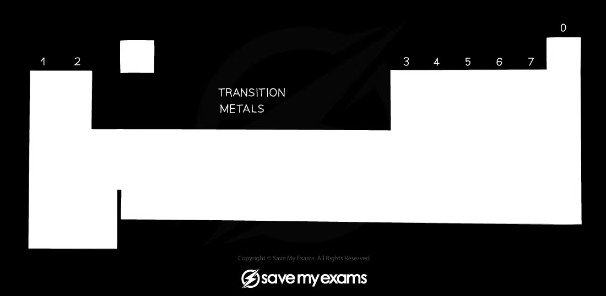</p>
<figcaption>d-block and transition-element definition</figcaption>
</figure>
</div>
</section>
<div class="worked-example">
<p><span class="we-tag">Worked example · Electronic configuration</span></p>
<section id="why-is-zinc-not-a-transition-element" class="level3">
<h3 class="anchored" data-anchor-id="why-is-zinc-not-a-transition-element">Why is zinc not a transition element?</h3>
<p><strong>Explain, using electronic configurations, why zinc is found in the d-block but is not classed as a transition element.</strong></p>
<div class="we-answer">
<p>Zinc is in the d-block because the differentiating electrons enter the <span class="math inline">\(3d\)</span> subshell. However, zinc forms <span class="math inline">\(\ce{Zn^{2+}}\)</span> with the configuration <span class="math inline">\(\ce{[Ar]3d^{10}}\)</span>. The d subshell is complete, so zinc does not form a stable ion with an incomplete d subshell.</p>
<p><strong>Final answer:</strong> zinc is a d-block element but not a transition element because <span class="math inline">\(\ce{Zn^{2+}}\)</span> has a complete <span class="math inline">\(3d^{10}\)</span> subshell.</p>
</div>
</section>
</div>
<section id="characteristic-properties" class="level3 study-card">
<h3 class="anchored" data-anchor-id="characteristic-properties">Characteristic properties</h3>
<p>Transition elements and their compounds commonly:</p>
<ul>
<li>show variable oxidation states, because the <span class="math inline">\(3d\)</span> and <span class="math inline">\(4s\)</span> levels are close in energy;</li>
<li>form complex ions with ligands;</li>
<li>form coloured ions and compounds;</li>
<li>act as catalysts, often by changing oxidation state or forming temporary coordinate bonds.</li>
</ul>
<p>These are characteristic properties rather than four independent definitions: a particular metal does not need to show every property in every compound.</p>
<div class="quarto-figure quarto-figure-center">
<figure class="figure">
<p>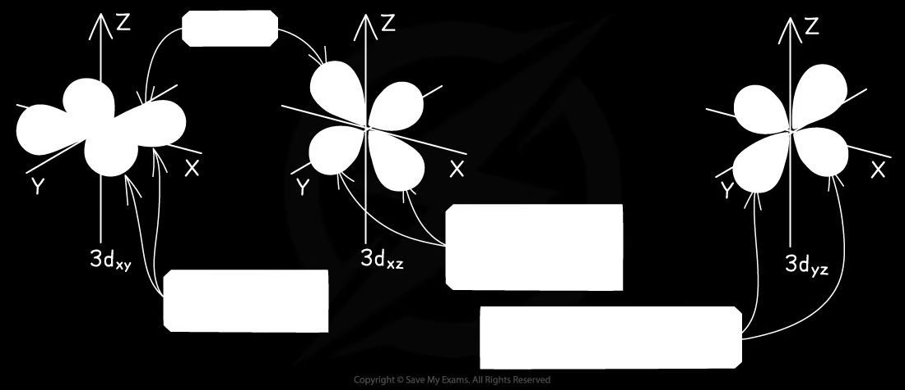</p>
<figcaption>Common electron configurations of transition-metal atoms and ions</figcaption>
</figure>
</div>
</section>
</section>
<section id="general-characteristic-chemical-properties-of-transition-elements" class="level2">
<h2 class="anchored" data-anchor-id="general-characteristic-chemical-properties-of-transition-elements">28.2 General characteristic chemical properties of transition elements</h2>
<section id="ligands-coordinate-bonds-and-complex-ions" class="level3 study-card">
<h3 class="anchored" data-anchor-id="ligands-coordinate-bonds-and-complex-ions">Ligands, coordinate bonds and complex ions</h3>
<p><strong>A ligand is a molecule or ion which has at least one lone pair of electrons that can be donated to a central metal atom or ion to form a coordinate bond.</strong></p>
<p><strong>A complex ion is a molecule or ion formed by a central metal atom or ion surrounded by one or more ligands.</strong></p>
<p>The number of coordinate bonds from ligands to the central metal is the <strong>coordination number</strong>. Common geometries are:</p>
<table class="caption-top table">
<thead>
<tr class="header">
<th style="text-align: right;">Coordination number</th>
<th>Geometry</th>
<th>Typical example</th>
</tr>
</thead>
<tbody>
<tr class="odd">
<td style="text-align: right;">2</td>
<td>linear, <span class="math inline">\(180^\circ\)</span></td>
<td><span class="math inline">\(\ce{[Ag(NH3)2]+}\)</span></td>
</tr>
<tr class="even">
<td style="text-align: right;">4</td>
<td>tetrahedral</td>
<td><span class="math inline">\(\ce{[CuCl4]^{2-}}\)</span></td>
</tr>
<tr class="odd">
<td style="text-align: right;">4</td>
<td>square planar</td>
<td>cisplatin, <span class="math inline">\(\ce{[Pt(NH3)2Cl2]}\)</span></td>
</tr>
<tr class="even">
<td style="text-align: right;">6</td>
<td>octahedral</td>
<td><span class="math inline">\(\ce{[Fe(H2O)6]^{2+}}\)</span></td>
</tr>
</tbody>
</table>
<p>Monodentate ligands donate one lone pair to make one coordinate bond. Bidentate ligands, such as ethane-1,2-diamine (<span class="math inline">\(\ce{en}\)</span>), make two coordinate bonds. EDTA<span class="math inline">\(^{4-}\)</span> is hexadentate.</p>
<div class="quarto-figure quarto-figure-center">
<figure class="figure">
<p>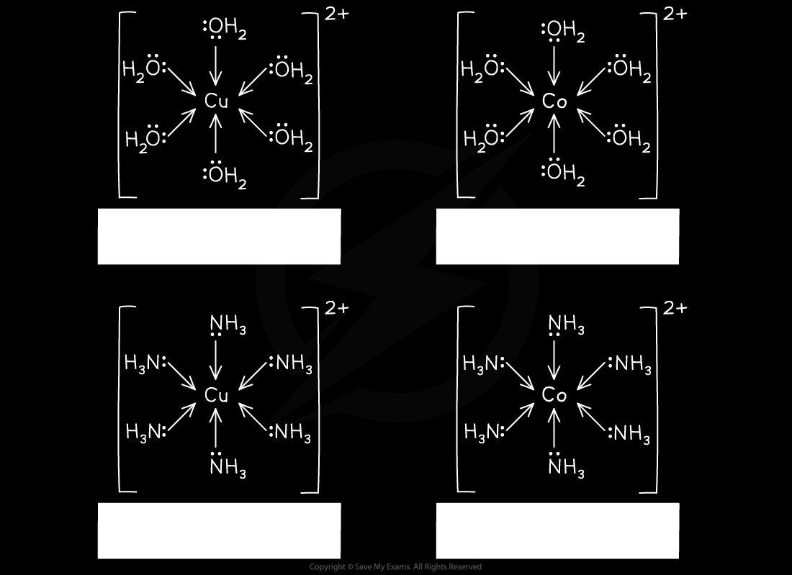</p>
<figcaption>Complex geometries</figcaption>
</figure>
</div>
</section>
<section id="ligand-exchange" class="level3 study-card">
<h3 class="anchored" data-anchor-id="ligand-exchange">Ligand exchange</h3>
<p>Ligand exchange is a substitution reaction in which one or more ligands in a complex are replaced by other ligands. For example:</p>
<p><span class="math display">\[\ce{[Cu(H2O)6]^2+ + 4Cl^- &lt;=&gt; [CuCl4]^2- + 6H2O}\]</span></p>
<p>The number and size of ligands affect both coordination number and shape. Six small water ligands can be replaced by four larger chloride ligands, giving a change from octahedral to tetrahedral.</p>
<p>With ammonia, copper(II) first forms a pale-blue hydroxide precipitate, then excess ammonia forms a deep-blue complex:</p>
<p><span class="math display">\[\ce{[Cu(H2O)6]^2+ + 2OH^- -&gt; Cu(OH)2(s) + 6H2O}\]</span> <span class="math display">\[\ce{[Cu(H2O)6]^2+ + 6NH3 -&gt; [Cu(NH3)6]^2+ + 6H2O}\]</span></p>
<div class="quarto-figure quarto-figure-center">
<figure class="figure">
<p>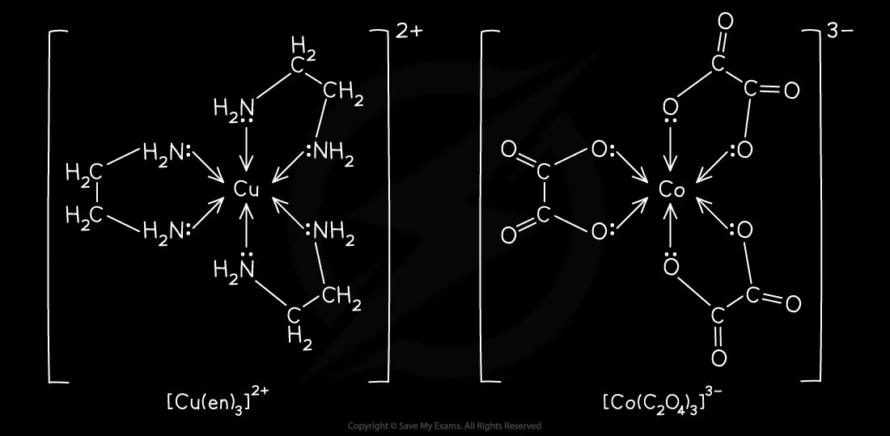</p>
<figcaption>Ligand exchange examples</figcaption>
</figure>
</div>
</section>
<section id="catalytic-behaviour" class="level3 study-card">
<h3 class="anchored" data-anchor-id="catalytic-behaviour">Catalytic behaviour</h3>
<p>Transition metals can catalyse reactions because they have variable oxidation states and accessible orbitals. They can provide an alternative pathway with lower activation energy, often through temporary intermediate complexes.</p>
<p>For the Contact process:</p>
<p><span class="math display">\[\ce{SO2 + V2O5 -&gt; SO3 + V2O4}\]</span> <span class="math display">\[\ce{V2O4 + 1/2O2 -&gt; V2O5}\]</span></p>
<p>Adding the equations gives:</p>
<p><span class="math display">\[\ce{SO2 + 1/2O2 -&gt; SO3}\]</span></p>
<p><span class="math inline">\(\ce{V2O5}\)</span> is regenerated and is therefore a catalyst. Iron in the Haber process is heterogeneous, while aqueous <span class="math inline">\(\ce{Fe^{2+}}\)</span> in the iodide–peroxodisulfate reaction and gaseous <span class="math inline">\(\ce{NO2}\)</span> in sulfur dioxide oxidation are homogeneous catalysts.</p>
<div class="quarto-figure quarto-figure-center">
<figure class="figure">
<p>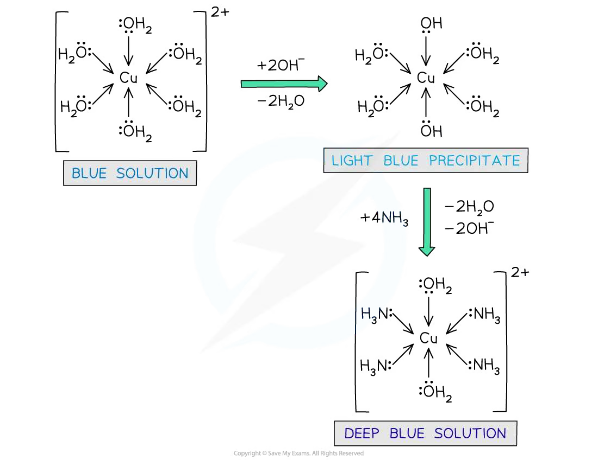</p>
<figcaption>Catalysis and redox cycles</figcaption>
</figure>
</div>
</section>
</section>
<section id="colour-of-transition-metal-complexes" class="level2">
<h2 class="anchored" data-anchor-id="colour-of-transition-metal-complexes">28.3 Colour of transition-metal complexes</h2>
<section id="d-orbital-splitting-and-absorption-of-light" class="level3 study-card">
<h3 class="anchored" data-anchor-id="d-orbital-splitting-and-absorption-of-light">d-orbital splitting and absorption of light</h3>
<p>In an isolated transition-metal ion, the five <span class="math inline">\(d\)</span> orbitals are <strong>degenerate</strong>, meaning that they have the same energy. When ligands approach, electron repulsion is different for orbitals pointing towards ligands and orbitals pointing between ligands. The d orbitals therefore split into two non-degenerate energy levels.</p>
<p>In an octahedral complex, the two orbitals pointing more directly towards ligands are higher in energy. In a tetrahedral complex, the ordering is reversed.</p>
<p>If the energy gap matches the energy of visible light, an electron absorbs that wavelength and is promoted to the higher d level. The complex appears the complementary colour of the absorbed light. Different ligands and different geometries cause different splitting energies, so related complexes can have different colours.</p>
<p>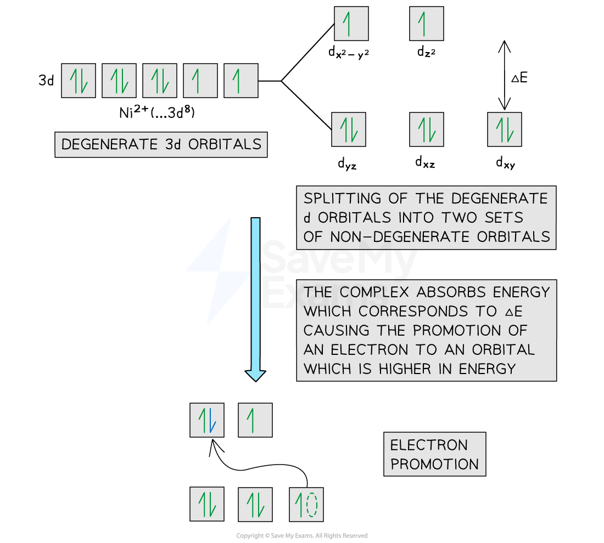 </p>
</section>
<div class="worked-example">
<p><span class="we-tag">Worked example · Explaining colour</span></p>
<section id="why-are-cobaltii-and-zincii-complexes-different-in-colour" class="level3">
<h3 class="anchored" data-anchor-id="why-are-cobaltii-and-zincii-complexes-different-in-colour">Why are cobalt(II) and zinc(II) complexes different in colour?</h3>
<p><strong>Explain why solutions containing <span class="math inline">\(\ce{[Co(H2O)6]^2+}\)</span> are coloured but solutions containing <span class="math inline">\(\ce{[Zn(H2O)4]^2+}\)</span> are not.</strong></p>
<div class="we-answer">
<p><span class="math inline">\(\ce{Co^{2+}}\)</span> has an incomplete <span class="math inline">\(3d\)</span> subshell. The water ligands split the d orbitals into two energy levels, and visible light can promote an electron between these levels. The unabsorbed complementary light gives the solution its colour.</p>
<p><span class="math inline">\(\ce{Zn^{2+}}\)</span> has a full <span class="math inline">\(3d^{10}\)</span> subshell. There is no partially filled d subshell and hence no suitable d–d transition in the visible region, so the complex is colourless.</p>
</div>
</section>
</div>
</section>
<section id="stereoisomerism" class="level2">
<h2 class="anchored" data-anchor-id="stereoisomerism">28.4 Stereoisomerism</h2>
<section id="geometrical-isomerism" class="level3 study-card">
<h3 class="anchored" data-anchor-id="geometrical-isomerism">Geometrical isomerism</h3>
<p>Octahedral complexes with two or more kinds of ligand can show cis–trans isomerism. In a cis isomer, identical ligands are adjacent and make a <span class="math inline">\(90^\circ\)</span> angle. In a trans isomer, identical ligands are opposite and make a <span class="math inline">\(180^\circ\)</span> angle.</p>
<p>For example, <span class="math inline">\(\ce{[Co(NH3)4Cl2]+}\)</span> has cis and trans forms. The same principle applies to square-planar complexes such as cisplatin.</p>
<div class="quarto-figure quarto-figure-center">
<figure class="figure">
<p>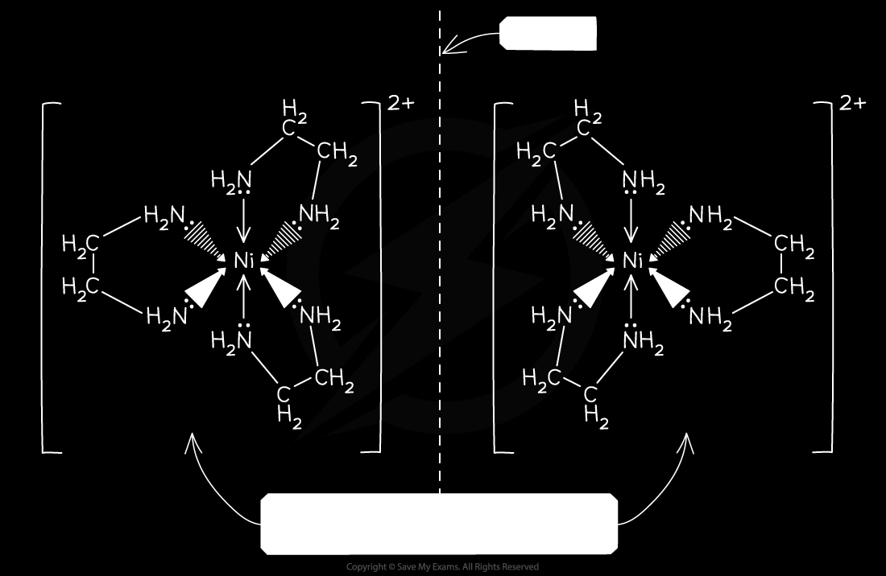</p>
<figcaption>Geometrical isomerism</figcaption>
</figure>
</div>
</section>
<section id="optical-isomerism" class="level3 study-card">
<h3 class="anchored" data-anchor-id="optical-isomerism">Optical isomerism</h3>
<p>Some octahedral complexes containing bidentate ligands exist as non-superimposable mirror images. These are optical isomers, or enantiomers. A common example is <span class="math inline">\(\ce{[Ni(en)3]^2+}\)</span>.</p>
<p>The two structures have the same connectivity and chemical formula but rotate plane-polarised light in opposite directions. A mirror image that can be rotated to coincide with the original is not a separate optical isomer.</p>
<div class="quarto-figure quarto-figure-center">
<figure class="figure">
<p>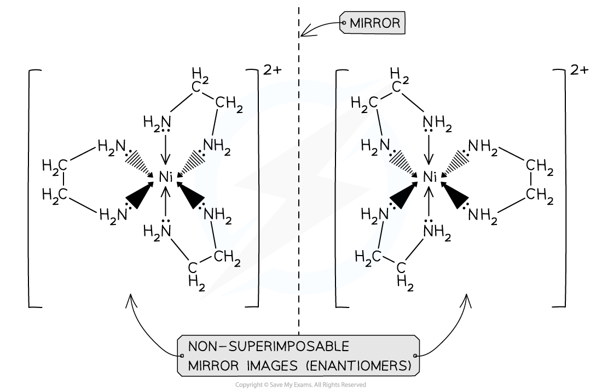</p>
<figcaption>Optical isomerism</figcaption>
</figure>
</div>
</section>
</section>
<section id="stability-constants-k_mathrmstab" class="level2">
<h2 class="anchored" data-anchor-id="stability-constants-k_mathrmstab">28.5 Stability constants, <span class="math inline">\(K_{\mathrm{stab}}\)</span></h2>
<section id="definition-and-expressions" class="level3 study-card">
<h3 class="anchored" data-anchor-id="definition-and-expressions">Definition and expressions</h3>
<p>For a ligand exchange reaction, the stability constant is the equilibrium constant for formation of the complex from the free metal ion and free ligand. For example:</p>
<p><span class="math display">\[\ce{[Cu(H2O)6]^2+ + 4NH3 &lt;=&gt; [Cu(NH3)4]^2+ + 6H2O}\]</span></p>
<p><span class="math display">\[K_{\mathrm{stab}}=\frac{[\ce{[Cu(NH3)4]^2+}]}{[\ce{[Cu(H2O)6]^2+}][\ce{NH3}]^4}\]</span></p>
<p>Water is omitted because it is the solvent and is present in large excess. A larger <span class="math inline">\(K_{\mathrm{stab}}\)</span> means that the product complex is more stable and the equilibrium lies further to the right.</p>
<div class="quarto-figure quarto-figure-center">
<figure class="figure">
<p>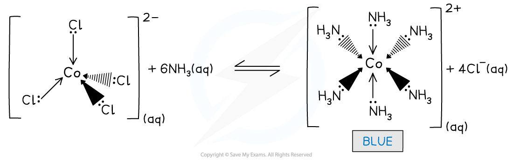</p>
<figcaption>Stability constant expression</figcaption>
</figure>
</div>
</section>
<div class="worked-example">
<p><span class="we-tag">Worked example · Stability constant</span></p>
<section id="comparing-two-ligand-exchange-equilibria" class="level3">
<h3 class="anchored" data-anchor-id="comparing-two-ligand-exchange-equilibria">Comparing two ligand-exchange equilibria</h3>
<p><strong>The stability constants for formation of <span class="math inline">\(\ce{[Fe(H2O)5F]^2+}\)</span> and <span class="math inline">\(\ce{[Fe(H2O)5SCN]^2+}\)</span> are <span class="math inline">\(2.0\times10^5\)</span> and <span class="math inline">\(1.0\times10^3\)</span> respectively. Predict what happens when fluoride is added to a solution containing the thiocyanate complex.</strong></p>
<div class="we-answer">
<p>The fluoride complex has the larger stability constant:</p>
<p><span class="math display">\[2.0\times10^5 &gt; 1.0\times10^3\]</span></p>
<p>Therefore fluoride displaces thiocyanate from the complex. The deep-red thiocyanate complex is replaced by the colourless fluoride complex. This is a ligand-exchange (ligand-displacement) reaction.</p>
</div>
</section>
</div>
</section>
<section id="chapter-checklist" class="level2">
<h2 class="anchored" data-anchor-id="chapter-checklist">Chapter checklist</h2>
<ul class="task-list">
<li><label><input type="checkbox">我能定义 transition element，并解释 zinc 为什么不属于 transition element。</label></li>
<li><label><input type="checkbox">我能写出过渡元素原子和离子的电子排布。</label></li>
<li><label><input type="checkbox">我能定义 ligand、complex ion、coordination number，并判断常见几何构型。</label></li>
<li><label><input type="checkbox">我能解释 ligand exchange、variable oxidation states 和 transition-metal catalysis。</label></li>
<li><label><input type="checkbox">我能用 d-orbital splitting 和 complementary colour 解释配合物颜色。</label></li>
<li><label><input type="checkbox">我能判断和绘制 cis–trans 与 optical isomers。</label></li>
<li><label><input type="checkbox">我能写出 <span class="math inline">\(K_{\mathrm{stab}}\)</span> 表达式并比较配合物稳定性。</label></li>
</ul>
</section>
<section id="structured-questions" class="level2">
<h2 class="anchored" data-anchor-id="structured-questions">Structured questions</h2>
</section>
</section>
<section id="chemistry-of-transition-elements-structured-questions" class="level1">
<h1>28 Chemistry of transition elements — Structured Questions</h1>
<p>本页保留题包中 6.2 与 6.3 的全部 Structured Questions。每题保留英文题干、所有分问、题目中可独立提取的局部图，以及完整 model-answer steps。</p>
<section id="properties-of-transition-elements-a-level-only---easy" class="level3">
<h3 class="anchored" data-anchor-id="properties-of-transition-elements-a-level-only---easy">6.2 Properties of Transition Elements (A Level Only) - Easy</h3>
</section>
<section id="example-1-definitions-and-electron-configurations-6.2-sq-easy-q1" class="level3 question-card">
<h3 class="anchored" data-anchor-id="example-1-definitions-and-electron-configurations-6.2-sq-easy-q1">Example 1 · Definitions and electron configurations · 6.2 SQ Easy Q1</h3>
<p>This question is about transition metals.</p>
<p><strong>(a)</strong> Explain what is meant by a transition metal. <code>[1 mark]</code></p>
<p><strong>(b)</strong></p>
<ol type="1">
<li>State the electronic configuration of <span class="math inline">\(\ce{Ti^{2+}}\)</span>. <code>[1 mark]</code></li>
<li>Explain, using the electronic configuration, why zinc is found in the d-block of the periodic table but is not classed as a transition metal. <code>[1 mark]</code></li>
</ol>
<p><strong>(c)</strong> Table 1.1 shows sketches of the shapes of some atomic orbitals. Identify the type of orbital, s, p or d, for each sketch.</p>
<p>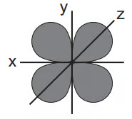 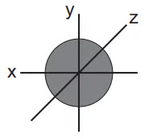 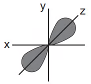</p>
<p><code>[3 marks]</code></p>
<p><strong>(d)</strong> Transition metals have characteristic properties. One of these properties is that they form coloured ions. State two other properties that transition metals or their ions exhibit. <code>[2 marks]</code></p>
<details class="answer-panel">
<summary>
Show mark scheme / model answer
</summary>
<ul>
<li><strong>(a)</strong> A transition metal is a metal or element which forms one or more stable ions with an incomplete or partially filled d orbital / d subshell. <code>[1]</code></li>
<li><strong>(b)(1)</strong> <span class="math inline">\(\ce{Ti^{2+}}\)</span>: <span class="math inline">\(\ce{1s^2 2s^2 2p^6 3s^2 3p^6 3d^2}\)</span> or <span class="math inline">\(\ce{[Ar]3d^2}\)</span>. <code>[1]</code></li>
<li><strong>(b)(2)</strong> <span class="math inline">\(\ce{Zn^{2+}}\)</span> has a complete <span class="math inline">\(3d^{10}\)</span> subshell, so zinc does not form a stable ion with an incomplete d subshell. <code>[1]</code></li>
<li><strong>(c)</strong> The orbital sketches are, respectively, d, s and p.&nbsp;<code>[3]</code></li>
<li><strong>(d)</strong> Any two: forms complexes / complex ions; shows variable oxidation states; behaves as a catalyst. <code>[2]</code></li>
</ul>
</details>
</section>
<section id="transition-element-complexes-isomers-reactions-stability-a-level-only---medium" class="level3">
<h3 class="anchored" data-anchor-id="transition-element-complexes-isomers-reactions-stability-a-level-only---medium">6.3 Transition Element Complexes: Isomers, Reactions &amp; Stability (A Level Only) - Medium</h3>
</section>
<section id="example-10-catalysis-and-redox-potentials-6.3-sq-medium-q1" class="level3 question-card">
<h3 class="anchored" data-anchor-id="example-10-catalysis-and-redox-potentials-6.3-sq-medium-q1">Example 10 · Catalysis and redox potentials · 6.3 SQ Medium Q1</h3>
<p><strong>(a)</strong> Sketch the shape of a <span class="math inline">\(3d_{xy}\)</span> orbital. <code>[1 mark]</code></p>
<p><strong>(b)</strong></p>
<ol type="1">
<li>Some transition elements and their compounds behave as catalysts. Explain why transition elements behave as catalysts. <code>[2 marks]</code></li>
<li>Catalysis can be heterogeneous or homogeneous. Complete the table by identifying the type of catalysis in each reaction.</li>
</ol>
<table class="caption-top table">
<thead>
<tr class="header">
<th>Reaction</th>
<th>Heterogeneous</th>
<th>Homogeneous</th>
</tr>
</thead>
<tbody>
<tr class="odd">
<td>Fe in the Haber process</td>
<td></td>
<td></td>
</tr>
<tr class="even">
<td><span class="math inline">\(\ce{Fe^{2+}}\)</span> in the <span class="math inline">\(\ce{I^- / S2O8^{2-}}\)</span> reaction</td>
<td></td>
<td></td>
</tr>
<tr class="odd">
<td><span class="math inline">\(\ce{NO2}\)</span> in the oxidation of <span class="math inline">\(\ce{SO2}\)</span></td>
<td></td>
<td></td>
</tr>
</tbody>
</table>
<p><code>[3 marks]</code></p>
<p><strong>(c)</strong> A solution containing a mixture of <span class="math inline">\(\ce{Sn^{2+}(aq)}\)</span> and <span class="math inline">\(\ce{Sn^{4+}(aq)}\)</span> is added to a solution containing a mixture of <span class="math inline">\(\ce{Fe^{2+}(aq)}\)</span> and <span class="math inline">\(\ce{Fe^{3+}(aq)}\)</span>. The relevant standard electrode potentials are:</p>
<table class="caption-top table">
<thead>
<tr class="header">
<th>Electrode reaction</th>
<th style="text-align: right;"><span class="math inline">\(E^\ominus\)</span>/V</th>
</tr>
</thead>
<tbody>
<tr class="odd">
<td><span class="math inline">\(\ce{Fe^{2+}+2e^- &lt;=&gt; Fe}\)</span></td>
<td style="text-align: right;"><span class="math inline">\(-0.44\)</span></td>
</tr>
<tr class="even">
<td><span class="math inline">\(\ce{Fe^{3+}+3e^- &lt;=&gt; Fe}\)</span></td>
<td style="text-align: right;"><span class="math inline">\(-0.04\)</span></td>
</tr>
<tr class="odd">
<td><span class="math inline">\(\ce{Fe^{3+}+e^- &lt;=&gt; Fe^{2+}}\)</span></td>
<td style="text-align: right;"><span class="math inline">\(+0.77\)</span></td>
</tr>
<tr class="even">
<td><span class="math inline">\(\ce{Sn^{2+}+2e^- &lt;=&gt; Sn}\)</span></td>
<td style="text-align: right;"><span class="math inline">\(-0.14\)</span></td>
</tr>
<tr class="odd">
<td><span class="math inline">\(\ce{Sn^{4+}+2e^- &lt;=&gt; Sn^{2+}}\)</span></td>
<td style="text-align: right;"><span class="math inline">\(+0.15\)</span></td>
</tr>
</tbody>
</table>
<ol type="1">
<li>Write an equation for the reaction. <code>[1 mark]</code></li>
<li>Calculate <span class="math inline">\(E^\ominus_{\mathrm{cell}}\)</span> for the reaction. <code>[1 mark]</code></li>
</ol>
<p><strong>(d)</strong> Hexaaquairon(III) ions are pale violet. They form a colourless complex with fluoride and a deep-red complex with thiocyanate:</p>
<p><span class="math display">\[\ce{[Fe(H2O)6]^3+ + F^- &lt;=&gt; [Fe(H2O)5F]^2+ + H2O}\quad K_{\mathrm{stab}}=2.0\times10^5\]</span> <span class="math display">\[\ce{[Fe(H2O)6]^3+ + SCN^- &lt;=&gt; [Fe(H2O)5SCN]^2+ + H2O}\quad K_{\mathrm{stab}}=1.0\times10^3\]</span></p>
<ol type="1">
<li>Predict and explain the sequence of colour changes when KSCN is added first to <span class="math inline">\(\ce{Fe^{3+}}\)</span> and then KF is added, and when KF is added first and then KSCN. <code>[4 marks]</code></li>
<li>Name the type of reaction occurring. <code>[1 mark]</code></li>
</ol>
<p><strong>(e)</strong> Solutions of iron(III) salts are acidic due to:</p>
<p><span class="math display">\[\ce{[Fe(H2O)6]^3+ &lt;=&gt; [Fe(H2O)5(OH)]^2+ + H+}\quad K_a=8.9\times10^{-4}\ \mathrm{mol\,dm^{-3}}\]</span></p>
<p>Calculate the pH of a <span class="math inline">\(0.25\ \mathrm{mol\,dm^{-3}}\)</span> <span class="math inline">\(\ce{FeCl3}\)</span> solution. Show your working. <code>[2 marks]</code></p>
<div class="quarto-figure quarto-figure-center">
<figure class="figure">
<p>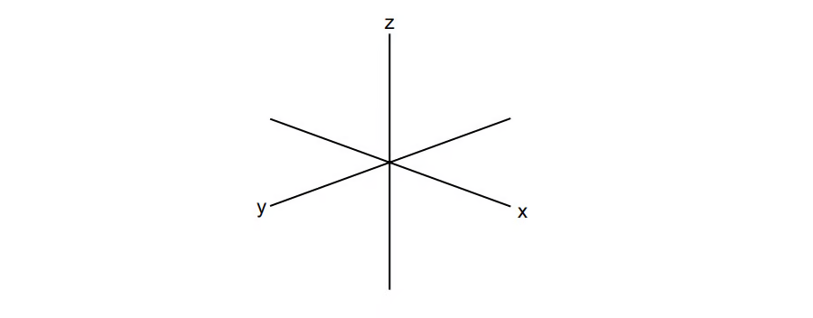</p>
<figcaption>Catalysis classification table</figcaption>
</figure>
</div>
<details class="answer-panel">
<summary>
Show mark scheme / model answer
</summary>
<ul>
<li><p><strong>(a)</strong> Four lobes lying between the x- and y-axes, in the xy-plane. <code>[1]</code></p></li>
<li><p><strong>(b)(1)</strong> Transition elements have more than one stable oxidation state and accessible orbitals / can form dative bonds, allowing temporary intermediates and an alternative lower-activation-energy pathway. <code>[2]</code></p></li>
<li><p><strong>(b)(2)</strong> Haber process: heterogeneous. <span class="math inline">\(\ce{Fe^{2+}}\)</span> iodide–peroxodisulfate reaction: homogeneous. <span class="math inline">\(\ce{NO2}\)</span> oxidation of sulfur dioxide: homogeneous. <code>[3]</code></p></li>
<li><p><strong>(c)(1)</strong> <span class="math inline">\(\ce{Sn^{2+} + 2Fe^{3+} -&gt; Sn^{4+} + 2Fe^{2+}}\)</span>. <code>[1]</code></p></li>
<li><p><strong>(c)(2)</strong> <span class="math inline">\(E^\ominus_{\mathrm{cell}}=+0.77-(+0.15)=+0.62\ \mathrm{V}\)</span>. <code>[1]</code></p></li>
<li><p><strong>(d)(1)</strong> Experiment 1: violet <span class="math inline">\(\)</span> deep-red after KSCN, then colourless after KF. Experiment 2: violet <span class="math inline">\(\)</span> colourless after KF, and remains colourless after KSCN. This is because <span class="math inline">\(K_{\mathrm{stab}}\)</span> for the fluoride complex is larger. <code>[4]</code></p></li>
<li><p><strong>(d)(2)</strong> Ligand exchange / ligand displacement / ligand substitution. <code>[1]</code></p></li>
<li><p><strong>(e)</strong> For the weak-acid equilibrium, let <span class="math inline">\(x=[\ce{H+}]\)</span>. The weak-acid approximation gives:</p>
<p><span class="math display">\[[\ce{H+}]=\sqrt{K_a[\ce{Fe^{3+}}]}=\sqrt{8.9\times10^{-4}\times0.25}=1.49\times10^{-2}\ \mathrm{mol\,dm^{-3}}\]</span></p>
<p><span class="math display">\[\mathrm{pH}=-\log(1.49\times10^{-2})=1.83\]</span></p>
<p><strong>Final answer:</strong> <span class="math inline">\(\mathrm{pH}=1.8\)</span> (approximately). <code>[2]</code></p></li>
</ul>
</details>
</section>
<section id="example-11-complex-ions-and-stereoisomerism-6.3-sq-medium-q2" class="level3 question-card">
<h3 class="anchored" data-anchor-id="example-11-complex-ions-and-stereoisomerism-6.3-sq-medium-q2">Example 11 · Complex ions and stereoisomerism · 6.3 SQ Medium Q2</h3>
<p><strong>(a)</strong> An aqueous solution of copper(II) contains <span class="math inline">\(\ce{[Cu(H2O)6]^2+}\)</span>. Define the term complex ion. <code>[1 mark]</code></p>
<p><strong>(b)</strong> Give the following information for these reactions.</p>
<ol type="1">
<li>Reaction of <span class="math inline">\(\ce{[Cu(H2O)6]^2+}\)</span> with aqueous sodium hydroxide: colour and state of the copper-containing species, ionic equation, and type of reaction. <code>[3 marks]</code></li>
<li>Reaction of <span class="math inline">\(\ce{[Co(H2O)6]^2+}\)</span> with excess aqueous ammonia: colour and state of the cobalt-containing species, ionic equation, and type of reaction. <code>[3 marks]</code></li>
</ol>
<p><strong>(c)</strong> The <span class="math inline">\(\ce{[Fe(NH3)2CN4]^-}\)</span> complex shows stereoisomerism. Complete the three-dimensional diagrams to show the two isomers and suggest the type of stereoisomers. <code>[3 marks]</code></p>
<div class="quarto-figure quarto-figure-center">
<figure class="figure">
<p></p>
<figcaption>Extracted iron complex isomer diagram</figcaption>
</figure>
</div>
<p><strong>(d)</strong> Compound A, <span class="math inline">\(\ce{C4H13N3}\)</span>, is a tridentate ligand.</p>
<ol type="1">
<li>Suggest why one molecule of A can form three dative bonds. <code>[1 mark]</code></li>
<li><span class="math inline">\(\ce{C4H13N3}\)</span> reacts with aqueous chromium(III) ions, <span class="math inline">\(\ce{[Cr(H2O)6]^{3+}}\)</span>, in a 2:1 ratio to form a new complex ion. Construct an equation. <code>[1 mark]</code></li>
</ol>
<div class="quarto-figure quarto-figure-center">
<figure class="figure">
<p></p>
<figcaption>Extracted tridentate-ligand diagram</figcaption>
</figure>
</div>
<details class="answer-panel">
<summary>
Show mark scheme / model answer
</summary>
<ul>
<li><strong>(a)</strong> A molecule or ion formed by a central metal atom or ion being surrounded by / bonded to one or more ligands. <code>[1]</code></li>
<li><strong>(b)(1)</strong> Blue precipitate / solid; <span class="math inline">\(\ce{[Cu(H2O)6]^2+ + 2OH^- -&gt; Cu(OH)2(s) + 6H2O}\)</span>; precipitation or acid–base reaction. <code>[3]</code></li>
<li><strong>(b)(2)</strong> Straw-yellow / brown solution; <span class="math inline">\(\ce{[Co(H2O)6]^2+ + 6NH3 -&gt; [Co(NH3)6]^2+ + 6H2O}\)</span>; ligand exchange / displacement / substitution. <code>[3]</code></li>
<li><strong>(c)</strong> One cis isomer with the two <span class="math inline">\(\ce{NH3}\)</span> ligands at <span class="math inline">\(90^\circ\)</span> and one trans isomer with them at <span class="math inline">\(180^\circ\)</span>, both with overall <span class="math inline">\(1-\)</span> charge. The isomerism is geometrical / cis–trans. <code>[3]</code></li>
<li><strong>(d)(1)</strong> Each of the three nitrogen atoms has a lone pair available to donate. <code>[1]</code></li>
<li><strong>(d)(2)</strong> <span class="math inline">\(\ce{[Cr(H2O)6]^3+ + 2C4H13N3 -&gt; [Cr(C4H13N3)2]^3+ + 6H2O}\)</span>. <code>[1]</code></li>
</ul>
</details>
</section>
<section id="example-12-cobalt-complexes-and-ligand-exchange-6.3-sq-medium-q3" class="level3 question-card">
<h3 class="anchored" data-anchor-id="example-12-cobalt-complexes-and-ligand-exchange-6.3-sq-medium-q3">Example 12 · Cobalt complexes and ligand exchange · 6.3 SQ Medium Q3</h3>
<p>Cobalt is a transition element with atomic number 27.</p>
<p><strong>(a)</strong> Complete the electronic configurations of a Co atom and a <span class="math inline">\(\ce{Co^{2+}}\)</span> ion. <code>[2 marks]</code></p>
<p><strong>(b)</strong> <span class="math inline">\(\ce{Co^{2+}}\)</span> ions form a linear complex with chloride ions, which are monodentate ligands. Draw the structure and include the overall charge. <code>[2 marks]</code></p>
<p><strong>(c)</strong> <span class="math inline">\(\ce{Co^{2+}}\)</span> ions exist as <span class="math inline">\(\ce{[Co(H2O)6]^{2+}}\)</span> in aqueous solution. Complete a three-dimensional diagram, name its shape, and label two bond angles. <code>[2 marks]</code></p>
<p><strong>(d)</strong> When ammonia is added to <span class="math inline">\(\ce{Co^{2+}}\)</span> dropwise and then in excess, two reactions occur:</p>
<p><span class="math display">\[\ce{[Co(H2O)6]^2+ -&gt;[dropwise\ NH3] A -&gt;[excess\ NH3] B}\]</span></p>
<p>For each reaction, describe what you see and write an equation. <code>[4 marks]</code></p>
<p><strong>(e)</strong> EDTA<span class="math inline">\(^{4-}\)</span> is a hexadentate ligand. Addition of EDTA<span class="math inline">\(^{4-}\)</span> to <span class="math inline">\(\ce{[Co(H2O)6]^{2+}}\)</span> forms <span class="math inline">\(\ce{[CoEDTA]^{2-}}\)</span>.</p>
<ol type="1">
<li>Explain what is meant by hexadentate ligand. <code>[2 marks]</code></li>
<li>Name the type of reaction. <code>[1 mark]</code></li>
<li>Write an expression for <span class="math inline">\(K_{\mathrm{stab}}\)</span>. <code>[1 mark]</code></li>
<li><span class="math inline">\(K_{\mathrm{stab}}=7.7\times10^4\ \mathrm{mol^{-6}\,dm^{18}}\)</span> at 298 K. State what this tells you about the complex ion. <code>[1 mark]</code></li>
</ol>
<div class="quarto-figure quarto-figure-center">
<figure class="figure">
<p></p>
<figcaption>Extracted cobalt complex diagram</figcaption>
</figure>
</div>
<details class="answer-panel">
<summary>
Show mark scheme / model answer
</summary>
<ul>
<li><strong>(a)</strong> Co atom: <span class="math inline">\(\ce{1s^2 2s^2 2p^6 3s^2 3p^6 3d^7 4s^2}\)</span>; <span class="math inline">\(\ce{Co^{2+}}\)</span>: <span class="math inline">\(\ce{1s^2 2s^2 2p^6 3s^2 3p^6 3d^7}\)</span>. <code>[2]</code></li>
<li><strong>(b)</strong> <span class="math inline">\(\ce{Cl^- - Co^{2+} - Cl^-}\)</span>, linear, overall charge zero. <code>[2]</code></li>
<li><strong>(c)</strong> Octahedral; bond angles include <span class="math inline">\(90^\circ\)</span> and <span class="math inline">\(180^\circ\)</span>. <code>[2]</code></li>
<li><strong>(d)</strong> Reaction 1: a blue precipitate forms, <span class="math inline">\(\ce{[Co(H2O)6]^2+ + 2NH3 -&gt; Co(OH)2(s) + 2NH4+ + 4H2O}\)</span> (equivalent ionic forms accepted). Reaction 2: the precipitate dissolves to form a straw-yellow / brown solution, <span class="math inline">\(\ce{[Co(H2O)6]^2+ + 6NH3 -&gt; [Co(NH3)6]^2+ + 6H2O}\)</span>. <code>[4]</code></li>
<li><strong>(e)(1)</strong> A ligand which forms six coordinate bonds to the central metal ion, using six donor atoms / lone pairs. <code>[2]</code></li>
<li><strong>(e)(2)</strong> Ligand exchange / substitution. <code>[1]</code></li>
<li><strong>(e)(3)</strong> <span class="math inline">\(\displaystyle K_{\mathrm{stab}}=\frac{[\ce{[CoEDTA]^{2-}}]}{[\ce{[Co(H2O)6]^{2+}}][\ce{EDTA^{4-}}]}\)</span>. Water is omitted. <code>[1]</code></li>
<li><strong>(e)(4)</strong> The relatively large value means the equilibrium is product-favoured and <span class="math inline">\(\ce{[CoEDTA]^{2-}}\)</span> is relatively stable. <code>[1]</code></li>
</ul>
</details>
</section>
<section id="example-13-cobalt-stereoisomerism-and-colour-6.3-sq-medium-q4" class="level3 question-card">
<h3 class="anchored" data-anchor-id="example-13-cobalt-stereoisomerism-and-colour-6.3-sq-medium-q4">Example 13 · Cobalt stereoisomerism and colour · 6.3 SQ Medium Q4</h3>
<p><strong>(a)</strong> When concentrated hydrochloric acid is added to <span class="math inline">\(\ce{[Co(H2O)6]^{2+}(aq)}\)</span>, the water ligands are replaced.</p>
<ol type="1">
<li>Suggest an equation for the reaction. <code>[2 marks]</code></li>
<li>Draw the three-dimensional diagram of the complex formed. <code>[2 marks]</code></li>
</ol>
<p><strong>(b)</strong> <span class="math inline">\(\ce{[Co(NH3)4Cl2]^+}\)</span> is an octahedral complex which exhibits cis–trans isomerism.</p>
<ol type="1">
<li>Deduce the oxidation state of cobalt and explain. <code>[2 marks]</code></li>
<li>Draw structures of the cis and trans isomers, clearly identifying each. <code>[3 marks]</code></li>
</ol>
<p><strong>(c)</strong> Explain the origin of colour in a transition-element complex such as <span class="math inline">\(\ce{[Co(NH3)4Cl2]^+}\)</span>. <code>[3 marks]</code></p>
<p><strong>(d)</strong> 1,2-diaminoethane is a bidentate ligand. When added to <span class="math inline">\(\ce{[Cu(H2O)6]^{2+}}\)</span>, all other ligands are replaced and two optical isomers form.</p>
<ol type="1">
<li>Suggest an equation for the reaction. <code>[2 marks]</code></li>
<li>Draw the two isomeric forms. <code>[3 marks]</code></li>
</ol>
<details class="answer-panel">
<summary>
Show mark scheme / model answer
</summary>
<ul>
<li><strong>(a)(1)</strong> <span class="math inline">\(\ce{[Co(H2O)6]^2+ + 4Cl^- -&gt; [CoCl4]^2- + 6H2O}\)</span>. <code>[2]</code></li>
<li><strong>(a)(2)</strong> Tetrahedral structure around cobalt, with four chloride ligands. <code>[2]</code></li>
<li><strong>(b)(1)</strong> Cobalt is <span class="math inline">\(+3\)</span>: <span class="math inline">\(x+4(0)+2(-1)=+1\)</span>, so <span class="math inline">\(x=+3\)</span>. <code>[2]</code></li>
<li><strong>(b)(2)</strong> Draw octahedral cis and trans forms; in cis the chloride ligands are adjacent (<span class="math inline">\(90^\circ\)</span>), in trans they are opposite (<span class="math inline">\(180^\circ\)</span>). <code>[3]</code></li>
<li><strong>(c)</strong> Ligands split the d orbitals into two levels; visible light is absorbed for a d–d transition; the complementary colour is seen. <code>[3]</code></li>
<li><strong>(d)(1)</strong> <span class="math inline">\(\ce{[Cu(H2O)6]^2+ + 3en -&gt; [Cu(en)3]^2+ + 6H2O}\)</span>. <code>[2]</code></li>
<li><strong>(d)(2)</strong> Draw two non-superimposable mirror-image octahedral complexes with three bidentate en ligands. <code>[3]</code></li>
</ul>
</details>
</section>
<section id="transition-element-complexes-isomers-reactions-stability-a-level-only---hard" class="level3">
<h3 class="anchored" data-anchor-id="transition-element-complexes-isomers-reactions-stability-a-level-only---hard">6.3 Transition Element Complexes: Isomers, Reactions &amp; Stability (A Level Only) - Hard</h3>
</section>
<section id="example-14-platinum-complexes-and-stereoisomerism-6.3-sq-hard-q1" class="level3 question-card">
<h3 class="anchored" data-anchor-id="example-14-platinum-complexes-and-stereoisomerism-6.3-sq-hard-q1">Example 14 · Platinum complexes and stereoisomerism · 6.3 SQ Hard Q1</h3>
<p>Carboplatin and oxaliplatin are platinum(II) diamines similar to cisplatin. Oxoplatin, iproplatin, ormaplatin and satraplatin are Pt complexes shown in Fig. 1.1. The central platinum ions have the same oxidation number and the complexes have the same shape.</p>
<p><strong>(a)</strong> Give the oxidation number of platinum and the shape of the complexes. <code>[2 marks]</code></p>
<div class="quarto-figure quarto-figure-center">
<figure class="figure">
<p>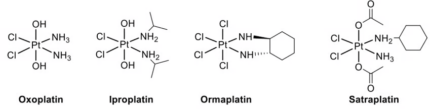</p>
<figcaption>Extracted oxoplatin structures</figcaption>
</figure>
</div>
<p><strong>(b)</strong> One isomer of <span class="math inline">\(\ce{[Pt(NH3)2Cl2(OH)2]}\)</span> is shown in Fig. 1.1. Complete diagrams to show the other oxoplatin stereoisomers and indicate the chiral one(s). <code>[4 marks]</code></p>
<div class="quarto-figure quarto-figure-center">
<figure class="figure">
<p>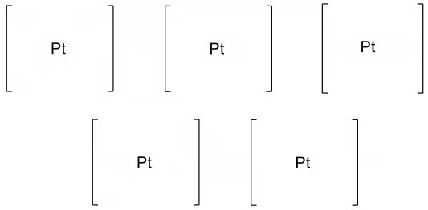</p>
<figcaption>Extracted oxoplatin isomers</figcaption>
</figure>
</div>
<p><strong>(c)</strong> Cisplatin can be produced by reduction of the prodrug cis,trans,cis-<span class="math inline">\(\ce{[PtCl2(OCOCH3)2(NH3)2]}\)</span>. Draw its structure. <code>[1 mark]</code></p>
<details class="answer-panel">
<summary>
Show mark scheme / model answer
</summary>
<ul>
<li><strong>(a)</strong> Platinum oxidation number <span class="math inline">\(+4\)</span>; octahedral because there are six coordinate bonds. <code>[2]</code></li>
<li><strong>(b)</strong> Draw all four distinct octahedral arrangements required by the prompt; the pair with no symmetry plane are non-superimposable mirror images and are the chiral isomers. <code>[4]</code></li>
<li><strong>(c)</strong> Draw an octahedral complex with the two <span class="math inline">\(\ce{Cl}\)</span> ligands cis, the two acetate ligands trans, and the two <span class="math inline">\(\ce{NH3}\)</span> ligands cis. <code>[1]</code></li>
</ul>
</details>
</section>
<section id="example-15-chromium-complexes-edta-and-empirical-formulae-6.3-sq-hard-q2" class="level3 question-card">
<h3 class="anchored" data-anchor-id="example-15-chromium-complexes-edta-and-empirical-formulae-6.3-sq-hard-q2">Example 15 · Chromium complexes, EDTA and empirical formulae · 6.3 SQ Hard Q2</h3>
<p>When chromium(III) sulfate dissolves in water, a green solution containing <span class="math inline">\(\ce{[Cr(H2O)6]^{3+}}\)</span> forms.</p>
<p><strong>(a)</strong></p>
<ol type="1">
<li>State the bond angles in this complex. <code>[1 mark]</code></li>
<li>Explain why the chromium(III) complex is coloured. <code>[3 marks]</code></li>
</ol>
<p><strong>(b)</strong> EDTA<span class="math inline">\(^{4-}\)</span> is a polydentate ligand. When added to <span class="math inline">\(\ce{[Cr(H2O)6]^{3+}}\)</span>:</p>
<p><span class="math display">\[\ce{[Cr(H2O)6]^3+ + EDTA^{4-} -&gt; [Cr(EDTA)]^- + 6H2O}\]</span></p>
<ol type="1">
<li>Name the type of reaction. <code>[1 mark]</code></li>
<li>Write an expression for <span class="math inline">\(K_{\mathrm{stab}}\)</span> of <span class="math inline">\(\ce{[Cr(EDTA)]^-}\)</span>. <code>[1 mark]</code></li>
<li><span class="math inline">\(K_{\mathrm{stab}}=2.51\times10^{23}\)</span> in this reaction. Suggest what this indicates about the position and entropy of the equilibrium. <code>[3 marks]</code></li>
</ol>
<div class="quarto-figure quarto-figure-center">
<figure class="figure">
<p></p>
<figcaption>Extracted EDTA ligand</figcaption>
</figure>
</div>
<p><strong>(c)</strong> Compound L has empirical formula <span class="math inline">\(\ce{CrN4H12Cl3}\)</span>. It contains one chloride ion and a complex ion M, which has two stereoisomers. Complete three-dimensional diagrams to show the stereoisomers of M. <code>[3 marks]</code></p>
<p><strong>(d)</strong> Chromium(III) picolinate is a neutral complex prepared from picolinic acid.</p>
<ol type="1">
<li>Draw the structure of the ligand in chromium(III) picolinate. <code>[1 mark]</code></li>
<li>A typical tablet contains <span class="math inline">\(200\ \mu\mathrm{g}\)</span> chromium. Calculate the mass, in grams, of chromium(III) picolinate. Give three significant figures. <code>[2 marks]</code></li>
</ol>
<div class="quarto-figure quarto-figure-center">
<figure class="figure">
<p>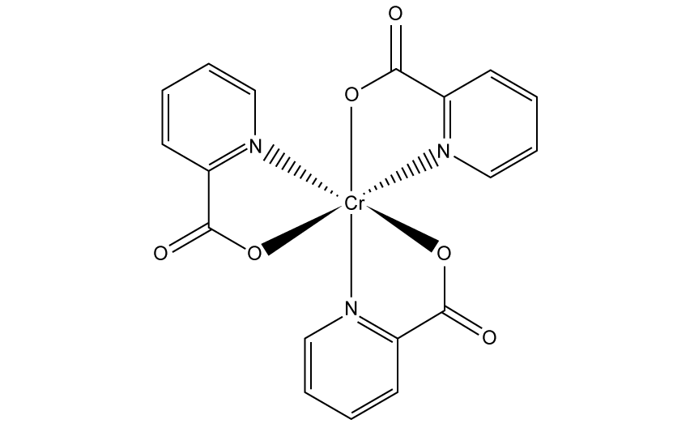</p>
<figcaption>Extracted picolinate structure</figcaption>
</figure>
</div>
<details class="answer-panel">
<summary>
Show mark scheme / model answer
</summary>
<ul>
<li><p><strong>(a)(1)</strong> <span class="math inline">\(90^\circ\)</span> angles (and <span class="math inline">\(180^\circ\)</span> between opposite ligands). <code>[1]</code></p></li>
<li><p><strong>(a)(2)</strong> The ligands split the d orbitals into two levels; visible light is absorbed to promote electrons; the complementary colour is transmitted / observed. <code>[3]</code></p></li>
<li><p><strong>(b)(1)</strong> Ligand exchange / substitution. <code>[1]</code></p></li>
<li><p><strong>(b)(2)</strong> <span class="math inline">\(\displaystyle K_{\mathrm{stab}}=\frac{[\ce{[Cr(EDTA)]^-}]}{[\ce{[Cr(H2O)6]^{3+}}][\ce{EDTA^{4-}}]}\)</span>. <code>[1]</code></p></li>
<li><p><strong>(b)(3)</strong> The very large stability constant places the equilibrium far to the right and indicates a stable product. The forward reaction increases entropy because one complex ion plus one ligand forms one complex ion plus six water molecules; the number of particles increases, so <span class="math inline">\(\Delta S_{\mathrm{system}}&gt;0\)</span>. <code>[3]</code></p></li>
<li><p><strong>(c)</strong> The complex ion is <span class="math inline">\(\ce{[Cr(NH3)4Cl2]^+}\)</span>, giving cis and trans octahedral stereoisomers. <code>[3]</code></p></li>
<li><p><strong>(d)(1)</strong> Picolinate is the deprotonated ligand with a pyridine nitrogen donor and a carboxylate oxygen donor. <code>[1]</code></p></li>
<li><p><strong>(d)(2)</strong> Chromium(III) picolinate has <span class="math inline">\(M_r=418.0\)</span> and contains one Cr atom per formula unit:</p>
<p><span class="math display">\[n(\ce{Cr})=\frac{200\times10^{-6}}{52.0}=3.85\times10^{-6}\ \mathrm{mol}\]</span> <span class="math display">\[m=3.85\times10^{-6}\times418.0=1.61\times10^{-3}\ \mathrm{g}\]</span></p>
<p><strong>Final answer:</strong> <span class="math inline">\(1.61\times10^{-3}\ \mathrm{g}\)</span>. <code>[2]</code></p></li>
</ul>
</details>
</section>
<section id="example-16-iron-supplements-and-redox-titration-6.3-sq-hard-q3" class="level3 question-card">
<h3 class="anchored" data-anchor-id="example-16-iron-supplements-and-redox-titration-6.3-sq-hard-q3">Example 16 · Iron supplements and redox titration · 6.3 SQ Hard Q3</h3>
<p>Iron(II) gluconate, <span class="math inline">\(\ce{C12H22FeO14}\)</span>, is the active ingredient in some iron supplements.</p>
<p>A student crushes two tablets, dissolves them in dilute sulfuric acid, makes the solution to <span class="math inline">\(250.0\ \mathrm{cm^3}\)</span>, and titrates <span class="math inline">\(25.0\ \mathrm{cm^3}\)</span> portions with <span class="math inline">\(0.00200\ \mathrm{mol\,dm^{-3}}\)</span> potassium manganate(VII). The mean titre is <span class="math inline">\(13.50\ \mathrm{cm^3}\)</span>. One mole of manganate(VII) reacts with five moles of iron(II).</p>
<p><strong>(a)</strong> Determine the mass, in mg, of iron(II) gluconate in one tablet. Give three significant figures. <code>[4 marks]</code></p>
<p><strong>(b)</strong> A typical potassium manganate(VII) concentration is <span class="math inline">\(0.0200\ \mathrm{mol\,dm^{-3}}\)</span>. Use the information in part (a) to explain quantitatively why the student used <span class="math inline">\(0.00200\ \mathrm{mol\,dm^{-3}}\)</span>. <code>[2 marks]</code></p>
<p><strong>(c)</strong> Iron supplements A and B have the following label data:</p>
<table class="caption-top table">
<thead>
<tr class="header">
<th>Supplement</th>
<th>Compound</th>
<th style="text-align: right;">Mass of compound in one tablet</th>
</tr>
</thead>
<tbody>
<tr class="odd">
<td>A</td>
<td><span class="math inline">\(\ce{FeSO4}\)</span></td>
<td style="text-align: right;"><span class="math inline">\(180\ \mathrm{mg}\)</span></td>
</tr>
<tr class="even">
<td>B</td>
<td><span class="math inline">\(\ce{C4H2FeO4}\)</span></td>
<td style="text-align: right;"><span class="math inline">\(210\ \mathrm{mg}\)</span></td>
</tr>
</tbody>
</table>
<p>State which provides the greater mass of iron per tablet and show your workings. <code>[1 mark]</code></p>
<details class="answer-panel">
<summary>
Show mark scheme / model answer
</summary>
<ul>
<li><p><strong>(a)</strong></p>
<p><span class="math display">\[n(\ce{MnO4^-})=\frac{13.50}{1000}\times0.00200=2.70\times10^{-5}\ \mathrm{mol}\]</span> <span class="math display">\[n(\ce{Fe^{2+}})_{25.0}=5(2.70\times10^{-5})=1.35\times10^{-4}\ \mathrm{mol}\]</span> <span class="math display">\[n(\ce{Fe^{2+}})_{250.0}=10(1.35\times10^{-4})=1.35\times10^{-3}\ \mathrm{mol}\]</span> <span class="math inline">\(M_r(\ce{C12H22FeO14})=445.8\)</span>. <span class="math display">\[m_{\text{two tablets}}=1.35\times10^{-3}\times445.8=0.6018\ \mathrm{g}\]</span> <span class="math display">\[m_{\text{one tablet}}=0.3009\ \mathrm{g}=301\ \mathrm{mg}\]</span></p>
<p><strong>Final answer:</strong> <span class="math inline">\(301\ \mathrm{mg}\)</span>. <code>[4]</code></p></li>
<li><p><strong>(b)</strong> A <span class="math inline">\(0.0200\ \mathrm{mol\,dm^{-3}}\)</span> solution is ten times more concentrated, so the titre would be <span class="math inline">\(13.50/10=1.35\ \mathrm{cm^3}\)</span>. This is too small to measure accurately and gives a high percentage uncertainty. <code>[2]</code></p></li>
<li><p><strong>(c)</strong></p>
<p><span class="math display">\[M_r(\ce{FeSO4})=151.9,\quad \%\ce{Fe}=\frac{55.8}{151.9}\times100=36.7\%\]</span> <span class="math display">\[m_\ce{Fe,A}=180\times0.367=66.1\ \mathrm{mg}\]</span></p>
<p><span class="math display">\[M_r(\ce{C4H2FeO4})=169.8,\quad \%\ce{Fe}=\frac{55.8}{169.8}\times100=32.9\%\]</span> <span class="math display">\[m_\ce{Fe,B}=210\times0.329=69.0\ \mathrm{mg}\]</span></p>
<p><strong>Final answer:</strong> supplement B. <code>[1]</code></p></li>
</ul>
</details>
</section>
<section id="example-17-ethanedioic-acid-and-permanganate-titration-6.3-sq-hard-q4" class="level3 question-card">
<h3 class="anchored" data-anchor-id="example-17-ethanedioic-acid-and-permanganate-titration-6.3-sq-hard-q4">Example 17 · Ethanedioic acid and permanganate titration · 6.3 SQ Hard Q4</h3>
<p><strong>(a)</strong> Write an equation for the reaction between ethanedioic acid, <span class="math inline">\(\ce{H2C2O4}\)</span>, and sodium hydroxide, <span class="math inline">\(\ce{NaOH}\)</span>. <code>[1 mark]</code></p>
<p><strong>(b)</strong> <span class="math inline">\(15.00\ \mathrm{cm^3}\)</span> of <span class="math inline">\(\ce{H2C2O4(aq)}\)</span> requires <span class="math inline">\(10.30\ \mathrm{cm^3}\)</span> of <span class="math inline">\(0.25\ \mathrm{mol\,dm^{-3}}\)</span> NaOH for complete neutralisation using phenolphthalein. The same <span class="math inline">\(15.00\ \mathrm{cm^3}\)</span> requires <span class="math inline">\(12.35\ \mathrm{cm^3}\)</span> of potassium manganate(VII) solution for complete oxidation to carbon dioxide and water in dilute sulfuric acid.</p>
<p>Calculate the moles of <span class="math inline">\(\ce{H2C2O4}\)</span> in the sample and hence the concentration of the solution. <code>[3 marks]</code></p>
<p><strong>(c)</strong> Write the full redox equation, including state symbols, for this redox titration. <code>[3 marks]</code></p>
<p><strong>(d)</strong> Calculate the concentration of the potassium manganate(VII) solution. <code>[2 marks]</code></p>
<details class="answer-panel">
<summary>
Show mark scheme / model answer
</summary>
<ul>
<li><p><strong>(a)</strong> <span class="math inline">\(\ce{H2C2O4 + 2NaOH -&gt; Na2C2O4 + 2H2O}\)</span>. <code>[1]</code></p></li>
<li><p><strong>(b)</strong></p>
<p>Neutralisation gives: <span class="math display">\[n(\ce{NaOH})=0.01030\times0.25=2.575\times10^{-3}\ \mathrm{mol}\]</span> <span class="math display">\[n(\ce{H2C2O4})=\frac{2.575\times10^{-3}}{2}=1.2875\times10^{-3}\ \mathrm{mol}\]</span> <span class="math display">\[c(\ce{H2C2O4})=\frac{1.2875\times10^{-3}}{0.01500}=0.0858\ \mathrm{mol\,dm^{-3}}\]</span></p>
<p><strong>Final answer:</strong> <span class="math inline">\(1.29\times10^{-3}\ \mathrm{mol}\)</span> in the aliquot and <span class="math inline">\(0.0858\ \mathrm{mol\,dm^{-3}}\)</span>. <code>[3]</code></p></li>
<li><p><strong>(c)</strong> <span class="math inline">\(\ce{2MnO4^-(aq) + 16H+(aq) + 5H2C2O4(aq) -&gt; 2Mn^{2+}(aq) + 8H2O(l) + 10CO2(g)}\)</span>. <code>[3]</code></p></li>
<li><p><strong>(d)</strong> The aliquot contains <span class="math inline">\(1.2875\times10^{-3}\ \mathrm{mol}\)</span> oxalic acid. The ratio is <span class="math inline">\(2\ce{MnO4^-}:5\ce{H2C2O4}\)</span>, so:</p>
<p><span class="math display">\[n(\ce{MnO4^-})=\frac{2}{5}(1.2875\times10^{-3})=5.15\times10^{-4}\ \mathrm{mol}\]</span> <span class="math display">\[c(\ce{MnO4^-})=\frac{5.15\times10^{-4}}{0.01235}=0.0417\ \mathrm{mol\,dm^{-3}}\]</span></p>
<p><strong>Final answer:</strong> <span class="math inline">\(0.0417\ \mathrm{mol\,dm^{-3}}\)</span>. <code>[2]</code></p></li>
</ul>
</details>
</section>
<section id="example-2-ligands-and-geometries-6.2-sq-easy-q2" class="level3 question-card">
<h3 class="anchored" data-anchor-id="example-2-ligands-and-geometries-6.2-sq-easy-q2">Example 2 · Ligands and geometries · 6.2 SQ Easy Q2</h3>
<p>This question is about transition metal complexes.</p>
<p><strong>(a)</strong> Define the terms ligand and complex. <code>[2 marks]</code></p>
<p><strong>(b)</strong> Transition metals can form complexes with different ligands. Identify one species from the following list that does not act as a ligand. Explain your answer.</p>
<p><span class="math display">\[\ce{CO\quad H2O\quad SCN^-\quad H2}\]</span></p>
<p><code>[1 mark]</code></p>
<p><strong>(c)</strong> A complex contains one <span class="math inline">\(\ce{Co^{2+}}\)</span> ion, four ammonia molecules and two chloride ions.</p>
<ol type="1">
<li>State the formula of this complex. <code>[1 mark]</code></li>
<li>State the shape of this complex. <code>[1 mark]</code></li>
</ol>
<p><strong>(d)</strong> The <span class="math inline">\(\ce{H2O}\)</span> ligands in <span class="math inline">\(\ce{[Fe(H2O)6]^{3+}}\)</span> can be exchanged for other ligands. Predict the shape of the complex ions formed after:</p>
<ol type="1">
<li>all the <span class="math inline">\(\ce{H2O}\)</span> ligands are exchanged for <span class="math inline">\(\ce{OH^-}\)</span> ligands; <code>[1 mark]</code></li>
<li>the six <span class="math inline">\(\ce{H2O}\)</span> ligands are exchanged for four <span class="math inline">\(\ce{Cl^-}\)</span> ligands. <code>[1 mark]</code></li>
</ol>
<p><strong>(e)</strong> Cisplatin can be used to treat some types of cancer. It is a square-planar transition-metal complex with a central platinum(II) ion, two chloride ligands and two ammonia ligands. Complete the three-dimensional diagram to show the shape of cisplatin. Label and state the value of one bond angle. <code>[2 marks]</code></p>
<details class="answer-panel">
<summary>
Show mark scheme / model answer
</summary>
<ul>
<li><strong>(a)</strong> A ligand is a molecule or ion with one or more lone pairs of electrons which can be donated to a central metal atom or ion to form a coordinate bond. A complex is a molecule or ion formed by a central metal atom or ion surrounded by one or more ligands. <code>[2]</code></li>
<li><strong>(b)</strong> <span class="math inline">\(\ce{H2}\)</span> / hydrogen. It has no lone pair of electrons available to donate. <code>[1]</code></li>
<li><strong>(c)(1)</strong> <span class="math inline">\(\ce{[Co(NH3)4Cl2]}\)</span>. The charges balance: <span class="math inline">\(+2+2(-1)=0\)</span>. <code>[1]</code></li>
<li><strong>(c)(2)</strong> Octahedral; there are six ligands around the metal ion. <code>[1]</code></li>
<li><strong>(d)(1)</strong> Octahedral; there are still six monodentate ligands. <code>[1]</code></li>
<li><strong>(d)(2)</strong> Tetrahedral; four larger chloride ligands occupy the coordination sites. <code>[1]</code></li>
<li><strong>(e)</strong> Draw a square-planar arrangement around Pt with the two ammonia ligands and two chloride ligands in the same plane. One correct angle is <span class="math inline">\(90^\circ\)</span> (the opposite angle is <span class="math inline">\(180^\circ\)</span>). <code>[2]</code></li>
</ul>
</details>
</section>
<section id="example-3-d-orbitals-and-splitting-6.2-sq-easy-q3" class="level3 question-card">
<h3 class="anchored" data-anchor-id="example-3-d-orbitals-and-splitting-6.2-sq-easy-q3">Example 3 · d orbitals and splitting · 6.2 SQ Easy Q3</h3>
<p>The d orbitals of a transition metal are involved in the formation of complexes.</p>
<p><strong>(a)</strong> In terms of energy, explain what is meant by degenerate orbitals. <code>[1 mark]</code></p>
<p><strong>(b)</strong> The <span class="math inline">\(d_{xy}\)</span> orbital has four lobes between the x- and y-axes.</p>
<ol type="1">
<li>State the difference between the shape of a <span class="math inline">\(d_{xy}\)</span> orbital and the shape of a <span class="math inline">\(d_{x^2-y^2}\)</span> orbital. <code>[1 mark]</code></li>
<li>Complete the three-dimensional diagram to show the shape of a <span class="math inline">\(d_{z^2}\)</span> orbital. <code>[2 marks]</code></li>
</ol>
<p> 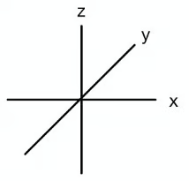</p>
<p><strong>(c)</strong> Suggest what causes d orbitals in a transition-metal ion to change from degenerate to non-degenerate. <code>[1 mark]</code></p>
<p><strong>(d)</strong> The splitting of degenerate d orbitals gives two sets of non-degenerate d orbitals at different energy levels. Complete the following description of the energy levels in octahedral and tetrahedral complexes.</p>
<table class="caption-top table">
<thead>
<tr class="header">
<th>Geometry</th>
<th>Higher-energy orbitals</th>
<th>Lower-energy orbitals</th>
</tr>
</thead>
<tbody>
<tr class="odd">
<td>Octahedral</td>
<td></td>
<td></td>
</tr>
<tr class="even">
<td>Tetrahedral</td>
<td></td>
<td></td>
</tr>
</tbody>
</table>
<p><code>[2 marks]</code></p>
<details class="answer-panel">
<summary>
Show mark scheme / model answer
</summary>
<ul>
<li><strong>(a)</strong> Degenerate orbitals have the same energy. <code>[1]</code></li>
<li><strong>(b)(1)</strong> In <span class="math inline">\(d_{xy}\)</span> the lobes lie between the axes; in <span class="math inline">\(d_{x^2-y^2}\)</span> the lobes lie along the x- and y-axes. <code>[1]</code></li>
<li><strong>(b)(2)</strong> Draw two lobes along the z-axis and a torus / doughnut around the centre in the xy-plane. <code>[2]</code></li>
<li><strong>(c)</strong> Repulsion between the ligand electron pairs and the d electrons causes the orbitals to split. <code>[1]</code></li>
<li><strong>(d)</strong> Octahedral: higher <span class="math inline">\(d_{x^2-y^2}\)</span> and <span class="math inline">\(d_{z^2}\)</span>; lower <span class="math inline">\(d_{xy}\)</span>, <span class="math inline">\(d_{xz}\)</span> and <span class="math inline">\(d_{yz}\)</span>. Tetrahedral: higher <span class="math inline">\(d_{xy}\)</span>, <span class="math inline">\(d_{xz}\)</span> and <span class="math inline">\(d_{yz}\)</span>; lower <span class="math inline">\(d_{x^2-y^2}\)</span> and <span class="math inline">\(d_{z^2}\)</span>. <code>[2]</code></li>
</ul>
</details>
</section>
<section id="properties-of-transition-elements-a-level-only---medium" class="level3">
<h3 class="anchored" data-anchor-id="properties-of-transition-elements-a-level-only---medium">6.2 Properties of Transition Elements (A Level Only) - Medium</h3>
</section>
<section id="example-4-monodentate-ligands-colour-and-isomerism-6.2-sq-medium-q1" class="level3 question-card">
<h3 class="anchored" data-anchor-id="example-4-monodentate-ligands-colour-and-isomerism-6.2-sq-medium-q1">Example 4 · Monodentate ligands, colour and isomerism · 6.2 SQ Medium Q1</h3>
<p><strong>(a)</strong> Define a transition element. <code>[1 mark]</code></p>
<p><strong>(b)</strong></p>
<ol type="1">
<li><span class="math inline">\(\ce{NH3}\)</span> acts as a monodentate ligand. State what is meant by monodentate ligand. <code>[2 marks]</code></li>
<li>Aqueous silver ions, <span class="math inline">\(\ce{Ag^+(aq)}\)</span>, react with aqueous ammonia, <span class="math inline">\(\ce{NH3(aq)}\)</span>, to form a linear complex. Suggest the formula of this complex, including its charge. <code>[1 mark]</code></li>
</ol>
<p><strong>(c)</strong> There are two isomeric complex ions with the formula <span class="math inline">\(\ce{[Cr(NH3)4Cl2]^+}\)</span>. One is green and the other is violet.</p>
<ol type="1">
<li>Suggest the type of isomerism shown. <code>[1 mark]</code></li>
<li>Explain why the two complex ions are coloured and why they have different colours. <code>[4 marks]</code></li>
</ol>
<div class="quarto-figure quarto-figure-center">
<figure class="figure">
<p>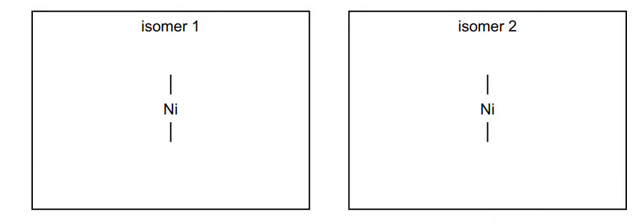</p>
<figcaption>Optical and geometrical complex examples</figcaption>
</figure>
</div>
<p><strong>(d)</strong> Ethane-1,2-diamine, <span class="math inline">\(\ce{H2NCH2CH2NH2}\)</span>, is represented by en. Nickel forms <span class="math inline">\(\ce{[Ni(en)3]^{2+}}\)</span>, in which it is surrounded octahedrally by six nitrogen atoms. Draw three-dimensional diagrams to show the stereoisomers. <code>[2 marks]</code></p>
<p><strong>(e)</strong></p>
<ol type="1">
<li>Explain how the amino groups in ethane-1,2-diamine allow the molecule to act as a Brønsted–Lowry base. <code>[2 marks]</code></li>
<li>Write an equation for the reaction of ethane-1,2-diamine with an excess of hydrochloric acid. <code>[1 mark]</code></li>
</ol>
<p><strong>(f)</strong></p>
<ol type="1">
<li>Under certain conditions ethane-1,2-diamine reacts with ethanedioic acid, <span class="math inline">\(\ce{HOOCCOOH}\)</span>, to form polymer Z. Draw the structure of polymer Z, showing two repeat units. <code>[2 marks]</code></li>
<li>Name the type of reaction occurring during this polymerisation. <code>[1 mark]</code></li>
</ol>
<details class="answer-panel">
<summary>
Show mark scheme / model answer
</summary>
<ul>
<li><strong>(a)</strong> An element which forms one or more stable ions with an incomplete d subshell. <code>[1]</code></li>
<li><strong>(b)(1)</strong> A ligand which forms one coordinate bond, using one lone pair, to the metal atom or ion. <code>[2]</code></li>
<li><strong>(b)(2)</strong> <span class="math inline">\(\ce{[Ag(NH3)2]^+}\)</span>. <code>[1]</code></li>
<li><strong>(c)(1)</strong> Cis–trans or geometrical isomerism. <code>[1]</code></li>
<li><strong>(c)(2)</strong> Ligands split the d orbitals into two energy levels; visible light is absorbed; an electron is promoted between the levels; the energy gap differs for the two isomers, so different wavelengths are absorbed and different complementary colours are seen. <code>[4]</code></li>
<li><strong>(d)</strong> Draw two non-superimposable mirror-image octahedral structures, each with three bidentate en ligands around Ni. <code>[2]</code></li>
<li><strong>(e)(1)</strong> Each nitrogen has a lone pair which accepts a proton. <code>[2]</code></li>
<li><strong>(e)(2)</strong> <span class="math inline">\(\ce{H2NCH2CH2NH2 + 2HCl -&gt; [H3NCH2CH2NH3]Cl2}\)</span>, or <span class="math inline">\(\ce{H2NCH2CH2NH2 + 2H+ -&gt; [H3NCH2CH2NH3]^{2+}}\)</span>. <code>[1]</code></li>
<li><strong>(f)(1)</strong> Two repeat units of <span class="math inline">\(\ce{[-NHCH2CH2NHCOCO-]}_n\)</span>, with continuation bonds at both ends and the amide links shown. <code>[2]</code></li>
<li><strong>(f)(2)</strong> Condensation polymerisation. <code>[1]</code></li>
</ul>
</details>
</section>
<section id="example-5-copper-complexes-and-catalysis-6.2-sq-medium-q2" class="level3 question-card">
<h3 class="anchored" data-anchor-id="example-5-copper-complexes-and-catalysis-6.2-sq-medium-q2">Example 5 · Copper complexes and catalysis · 6.2 SQ Medium Q2</h3>
<p>Copper, vanadium and iron are all transition elements.</p>
<p><strong>(a)</strong></p>
<ol type="1">
<li>Give the full electronic configuration of a Cu atom and a <span class="math inline">\(\ce{Cu^{2+}}\)</span> ion. <code>[2 marks]</code></li>
<li>State four characteristic features of the chemistry of copper and its compounds. <code>[4 marks]</code></li>
</ol>
<p><strong>(b)</strong> Chloride is a monodentate ligand. When concentrated hydrochloric acid is added to <span class="math inline">\(\ce{[Cu(H2O)6]^{2+}(aq)}\)</span>, the water ligands are replaced.</p>
<ol type="1">
<li>Define monodentate ligand. <code>[1 mark]</code></li>
<li>Write an equation for the reaction. <code>[1 mark]</code></li>
<li>Draw the structure of the complex ion formed and name its shape. <code>[2 marks]</code></li>
<li>State the change in coordination number. <code>[1 mark]</code></li>
</ol>
<p><strong>(c)</strong> Vanadium(V) oxide is the catalyst used in the Contact process:</p>
<p><span class="math display">\[\ce{SO2 + V2O5 -&gt; SO3 + V2O4}\]</span> <span class="math display">\[\ce{V2O4 + 1/2O2 -&gt; V2O5}\]</span></p>
<ol type="1">
<li>Write the overall equation. <code>[1 mark]</code></li>
<li>Explain why <span class="math inline">\(\ce{V2O5}\)</span> is a catalyst. <code>[1 mark]</code></li>
<li>Explain why <span class="math inline">\(\ce{V2O5}\)</span> is able to act as a catalyst in this reaction. <code>[1 mark]</code></li>
</ol>
<p><strong>(d)</strong> When iron(II) compounds dissolve in water they form <span class="math inline">\(\ce{[Fe(H2O)6]^{2+}}\)</span>.</p>
<ol type="1">
<li>State the full electronic configuration of an iron(II) ion. <code>[1 mark]</code></li>
<li>Predict the shape and bond angle. <code>[2 marks]</code></li>
</ol>
<details class="answer-panel">
<summary>
Show mark scheme / model answer
</summary>
<ul>
<li><strong>(a)(1)</strong> <span class="math inline">\(\ce{Cu}:1s^2 2s^2 2p^6 3s^2 3p^6 3d^{10}4s^1\)</span>; <span class="math inline">\(\ce{Cu^{2+}}:1s^2 2s^2 2p^6 3s^2 3p^6 3d^9\)</span>. <code>[2]</code></li>
<li><strong>(a)(2)</strong> Any four: variable oxidation states; coloured ions/compounds; complex ions; catalytic behaviour. <code>[4]</code></li>
<li><strong>(b)(1)</strong> A ligand forming one coordinate bond / donating one lone pair. <code>[1]</code></li>
<li><strong>(b)(2)</strong> <span class="math inline">\(\ce{[Cu(H2O)6]^2+ + 4Cl^- -&gt; [CuCl4]^2- + 6H2O}\)</span>. <code>[1]</code></li>
<li><strong>(b)(3)</strong> Correct four-coordinate structure and tetrahedral shape. <code>[2]</code></li>
<li><strong>(b)(4)</strong> Coordination number changes from 6 to 4. <code>[1]</code></li>
<li><strong>(c)(1)</strong> <span class="math inline">\(\ce{SO2 + 1/2O2 -&gt; SO3}\)</span>. <code>[1]</code></li>
<li><strong>(c)(2)</strong> <span class="math inline">\(\ce{V2O5}\)</span> is used and regenerated, so it is not consumed overall. <code>[1]</code></li>
<li><strong>(c)(3)</strong> Vanadium has variable oxidation states and can transfer oxygen / form intermediates, giving an alternative lower-activation-energy pathway. <code>[1]</code></li>
<li><strong>(d)(1)</strong> <span class="math inline">\(\ce{1s^2 2s^2 2p^6 3s^2 3p^6 3d^6}\)</span>. <code>[1]</code></li>
<li><strong>(d)(2)</strong> Octahedral, with <span class="math inline">\(90^\circ\)</span> bond angles. <code>[2]</code></li>
</ul>
</details>
</section>
<section id="example-6-stability-constants-and-copper-colours-6.2-sq-medium-q3" class="level3 question-card">
<h3 class="anchored" data-anchor-id="example-6-stability-constants-and-copper-colours-6.2-sq-medium-q3">Example 6 · Stability constants and copper colours · 6.2 SQ Medium Q3</h3>
<p>A solution is made by dissolving <span class="math inline">\(\ce{CuSO4.5H2O}\)</span> in excess aqueous ammonia. It contains <span class="math inline">\(\ce{[Cu(NH3)4]^{2+}}\)</span>.</p>
<p><strong>(a)</strong></p>
<ol type="1">
<li>Write an expression for <span class="math inline">\(K_{\mathrm{stab}}\)</span> of <span class="math inline">\(\ce{[Cu(NH3)4]^{2+}}\)</span>. <code>[1 mark]</code></li>
<li>State the colour of the solution. <code>[1 mark]</code></li>
</ol>
<p>The solution is heated gently so that ammonia is released. Some ammonia remains in solution and some forms ammonia gas. The colour changes; a precipitate of <span class="math inline">\(\ce{Cu(OH)2}\)</span> forms and is collected. A sample of <span class="math inline">\(\ce{Cu(OH)2}\)</span> is added to concentrated hydrochloric acid to form coloured complex Y. A sample is added to dilute sulfuric acid to form coloured complex Z. The three complexes have different colours.</p>
<p><strong>(b)</strong> Suggest an equation for formation of <span class="math inline">\(\ce{Cu(OH)2}\)</span> as <span class="math inline">\(\ce{[Cu(NH3)4]^{2+}}\)</span> is heated. <code>[1 mark]</code></p>
<p><strong>(c)</strong> Suggest an equation for reaction of <span class="math inline">\(\ce{Cu(OH)2}\)</span> with concentrated hydrochloric acid, forming Y. <code>[2 marks]</code></p>
<p><strong>(d)</strong> Complete the table with the colour and geometry of Y and the colour, geometry and formula of Z. <code>[2 marks]</code></p>
<p><strong>(e)</strong> Explain why Y and Z are coloured and why their colours are different. <code>[5 marks]</code></p>
<details class="answer-panel">
<summary>
Show mark scheme / model answer
</summary>
<ul>
<li><strong>(a)(1)</strong> <span class="math inline">\(\displaystyle K_{\mathrm{stab}}=\frac{[\ce{[Cu(NH3)4]^{2+}}]}{[\ce{Cu^{2+}}][\ce{NH3}]^4}\)</span>, or with the aquo complex as reactant, omit water from the denominator. <code>[1]</code></li>
<li><strong>(a)(2)</strong> Deep / royal blue. <code>[1]</code></li>
<li><strong>(b)</strong> One acceptable ionic equation is <span class="math inline">\(\ce{[Cu(NH3)4]^2+ + 2OH^- -&gt; Cu(OH)2(s) + 4NH3(aq)}\)</span>. <code>[1]</code></li>
<li><strong>(c)</strong> <span class="math inline">\(\ce{Cu(OH)2(s) + 4Cl^- -&gt; [CuCl4]^2-(aq) + 2OH^-}\)</span>, with excess concentrated chloride / acid conditions understood; alternatively show the acid–base neutralisation followed by ligand exchange. <code>[2]</code></li>
<li><strong>(d)</strong> Y: yellow, tetrahedral, <span class="math inline">\(\ce{[CuCl4]^{2-}}\)</span>; Z: pale blue, octahedral, <span class="math inline">\(\ce{[Cu(H2O)6]^{2+}}\)</span>. <code>[2]</code></li>
<li><strong>(e)</strong> The ligand field splits the d orbitals; visible light is absorbed to promote an electron; the unabsorbed complementary colour is observed. Y and Z have different ligands and geometries, so their d-orbital splitting and absorbed wavelengths differ. <code>[5]</code></li>
</ul>
</details>
</section>
<section id="example-7-variable-oxidation-states-and-coloured-complexes-6.2-sq-medium-q4" class="level3 question-card">
<h3 class="anchored" data-anchor-id="example-7-variable-oxidation-states-and-coloured-complexes-6.2-sq-medium-q4">Example 7 · Variable oxidation states and coloured complexes · 6.2 SQ Medium Q4</h3>
<p><strong>(a)</strong> Explain why transition metals exhibit variable oxidation states compared with Group 1 elements. <code>[2 marks]</code></p>
<p><strong>(b)</strong> Transition-metal compounds and ions are often coloured. For example, <span class="math inline">\(\ce{[Cr(H2O)6]^{3+}}\)</span> is green. Explain why <span class="math inline">\(\ce{[Cr(H2O)6]^{3+}}\)</span> and other complex ions are coloured. <code>[3 marks]</code></p>
<p><strong>(c)</strong> Zinc and cobalt ions react with water to form <span class="math inline">\(\ce{[Zn(H2O)4]^{2+}}\)</span> and <span class="math inline">\(\ce{[Co(H2O)6]^{2+}}\)</span>.</p>
<ol type="1">
<li>Explain how water acts as a ligand. <code>[2 marks]</code></li>
<li>Predict the shape of <span class="math inline">\(\ce{[Co(H2O)6]^{2+}}\)</span>. <code>[1 mark]</code></li>
</ol>
<p><strong>(d)</strong> Explain why solutions containing <span class="math inline">\(\ce{[Co(H2O)6]^{2+}}\)</span> are coloured but solutions containing <span class="math inline">\(\ce{[Zn(H2O)4]^{2+}}\)</span> are not. <code>[4 marks]</code></p>
<details class="answer-panel">
<summary>
Show mark scheme / model answer
</summary>
<ul>
<li><strong>(a)</strong> The 3d and 4s electrons are close in energy, so different numbers of these electrons can be removed or used in bonding. Group 1 has one outer electron and normally forms only <span class="math inline">\(+1\)</span> ions. <code>[2]</code></li>
<li><strong>(b)</strong> Water ligands cause d-orbital splitting; visible light is absorbed to promote electrons between the levels; the complementary colour is transmitted / observed. <code>[3]</code></li>
<li><strong>(c)(1)</strong> An oxygen lone pair on each water molecule is donated to the metal ion to form a coordinate bond. <code>[2]</code></li>
<li><strong>(c)(2)</strong> Octahedral. <code>[1]</code></li>
<li><strong>(d)</strong> <span class="math inline">\(\ce{Co^{2+}}\)</span> has an incomplete d subshell, so d–d transitions absorb visible light. <span class="math inline">\(\ce{Zn^{2+}}\)</span> has a full <span class="math inline">\(3d^{10}\)</span> subshell, so there is no d–d transition and the complex is colourless. <code>[4]</code></li>
</ul>
</details>
</section>
<section id="properties-of-transition-elements-a-level-only---hard" class="level3">
<h3 class="anchored" data-anchor-id="properties-of-transition-elements-a-level-only---hard">6.2 Properties of Transition Elements (A Level Only) - Hard</h3>
<div class="small-note">
<p>The local question set contains Easy and Medium PDFs for 6.2, but no corresponding 6.2 Hard PDF. No fictitious questions have been added.</p>
</div>
</section>
<section id="transition-element-complexes-isomers-reactions-stability-a-level-only---easy" class="level3">
<h3 class="anchored" data-anchor-id="transition-element-complexes-isomers-reactions-stability-a-level-only---easy">6.3 Transition Element Complexes: Isomers, Reactions &amp; Stability (A Level Only) - Easy</h3>
</section>
<section id="example-8-copper-ligand-exchange-6.3-sq-easy-q1" class="level3 question-card">
<h3 class="anchored" data-anchor-id="example-8-copper-ligand-exchange-6.3-sq-easy-q1">Example 8 · Copper ligand exchange · 6.3 SQ Easy Q1</h3>
<p>This question is about ligand exchange in copper(II) complexes.</p>
<p><strong>(a)</strong> Complete Table 1.1 to show whether the coordination number and shape change for ligand exchange of similarly sized ligands and differently sized ligands. <code>[2 marks]</code></p>
<p><strong>(b)</strong> When copper(II) sulfate dissolves in water, state the formula of the hexaaquacopper(II) complex represented by <span class="math inline">\(\ce{Cu^{2+}(aq)}\)</span>. <code>[1 mark]</code></p>
<p><strong>(c)</strong> Complete the three-dimensional diagram to show the hexaaquacopper(II) complex. <code>[2 marks]</code></p>
<div class="quarto-figure quarto-figure-center">
<figure class="figure">
<p>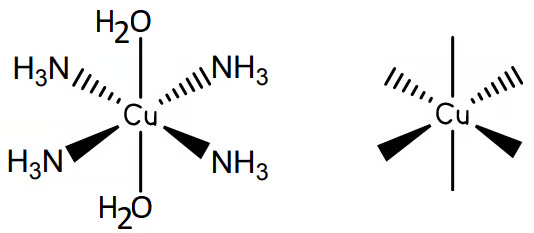</p>
<figcaption>Extracted cis-trans copper complex diagram</figcaption>
</figure>
</div>
<p><strong>(d)</strong> Hexaaquacopper(II) ions react with concentrated hydrochloric acid to form complex A. Complete the table with the colour and geometry of the hexaaquacopper(II) complex and the colour, geometry and formula of A. <code>[2 marks]</code></p>
<p><strong>(e)</strong> In concentrated ammonia, hexaaquacopper(II) initially forms <span class="math inline">\(\ce{Cu(OH)2(H2O)4}\)</span>.</p>
<ol type="1">
<li>Give the colour and state of <span class="math inline">\(\ce{Cu(OH)2(H2O)4}\)</span>. <code>[1 mark]</code></li>
<li>In excess concentrated ammonia it forms <span class="math inline">\(\ce{[Cu(NH3)4(H2O)2]^{2+}}\)</span>. Give the colour and state. <code>[1 mark]</code></li>
<li>The product is a mixture of two geometrical isomers. The trans isomer is shown in the question. Complete the diagram to show the cis isomer. <code>[1 mark]</code></li>
</ol>
<details class="answer-panel">
<summary>
Show mark scheme / model answer
</summary>
<ul>
<li><strong>(a)</strong> Similarly sized ligands: coordination number no change, shape no change. Differently sized ligands: coordination number changes, shape changes. <code>[2]</code></li>
<li><strong>(b)</strong> <span class="math inline">\(\ce{[Cu(H2O)6]^{2+}(aq)}\)</span>. <code>[1]</code></li>
<li><strong>(c)</strong> Central Cu surrounded by six water ligands with correct three-dimensional bond conventions; square brackets and <span class="math inline">\(2+\)</span> charge. <code>[2]</code></li>
<li><strong>(d)</strong> Hexaaquacopper(II): pale blue, octahedral. A: yellow, tetrahedral, <span class="math inline">\(\ce{[CuCl4]^{2-}}\)</span>. <code>[2]</code></li>
<li><strong>(e)(1)</strong> Pale blue solid / precipitate. <code>[1]</code></li>
<li><strong>(e)(2)</strong> Deep / dark / royal blue aqueous solution. <code>[1]</code></li>
<li><strong>(e)(3)</strong> The two water ligands are adjacent in the cis isomer rather than opposite as in the given trans isomer. <code>[1]</code></li>
</ul>
</details>
</section>
<section id="example-9-electrode-potentials-and-permanganate-6.3-sq-easy-q2q3" class="level3 question-card">
<h3 class="anchored" data-anchor-id="example-9-electrode-potentials-and-permanganate-6.3-sq-easy-q2q3">Example 9 · Electrode potentials and permanganate · 6.3 SQ Easy Q2–Q3</h3>
<p>The feasibility of redox reactions can be determined using standard electrode potential, <span class="math inline">\(E^\ominus\)</span>, values. The cell reaction is:</p>
<p><span class="math display">\[\ce{Pb^{4+}(aq) + 2Mn^{2+}(aq) -&gt; 2Mn^{3+}(aq) + Pb^{2+}(aq)}\]</span></p>
<p>Table 2.1 gives:</p>
<table class="caption-top table">
<thead>
<tr class="header">
<th>Electrode reaction</th>
<th style="text-align: right;"><span class="math inline">\(E^\ominus\)</span>/V</th>
</tr>
</thead>
<tbody>
<tr class="odd">
<td><span class="math inline">\(\ce{Mn^{2+}+2e^- &lt;=&gt; Mn}\)</span></td>
<td style="text-align: right;"><span class="math inline">\(-1.18\)</span></td>
</tr>
<tr class="even">
<td><span class="math inline">\(\ce{Mn^{3+}+e^- &lt;=&gt; Mn^{2+}}\)</span></td>
<td style="text-align: right;"><span class="math inline">\(+1.49\)</span></td>
</tr>
<tr class="odd">
<td><span class="math inline">\(\ce{Pb^{2+}+2e^- &lt;=&gt; Pb}\)</span></td>
<td style="text-align: right;"><span class="math inline">\(-0.13\)</span></td>
</tr>
<tr class="even">
<td><span class="math inline">\(\ce{Pb^{4+}+2e^- &lt;=&gt; Pb^{2+}}\)</span></td>
<td style="text-align: right;"><span class="math inline">\(+1.69\)</span></td>
</tr>
</tbody>
</table>
<p><strong>(a)</strong> Use the table to determine the reduction and oxidation half-equations, written in conventional reduction format. <code>[2 marks]</code></p>
<p><strong>(b)</strong> Calculate <span class="math inline">\(E^\ominus_{\mathrm{cell}}\)</span>. <code>[1 mark]</code></p>
<p><strong>(c)</strong> Suggest whether the reaction is feasible and explain. <code>[1 mark]</code></p>
<p>Potassium manganate(VII) can be used to titrate iron(II).</p>
<p><strong>(d)</strong></p>
<ol type="1">
<li>Complete the half-equation for reduction of <span class="math inline">\(\ce{MnO4^-}\)</span> to <span class="math inline">\(\ce{Mn^{2+}}\)</span> in acid solution. <code>[1 mark]</code></li>
<li>Explain whether this is oxidation or reduction. <code>[1 mark]</code></li>
</ol>
<p><strong>(e)</strong></p>
<ol type="1">
<li>Write the half-equation for oxidation of <span class="math inline">\(\ce{Fe^{2+}}\)</span> to <span class="math inline">\(\ce{Fe^{3+}}\)</span>, with state symbols. <code>[1 mark]</code></li>
<li>Explain whether this is oxidation or reduction. <code>[1 mark]</code></li>
</ol>
<p><strong>(f)</strong> Using the half-equations, write the full equation for reaction between <span class="math inline">\(\ce{Fe^{2+}}\)</span> and <span class="math inline">\(\ce{MnO4^-}\)</span>. <code>[2 marks]</code></p>
<details class="answer-panel">
<summary>
Show mark scheme / model answer
</summary>
<ul>
<li><strong>(a)</strong> Reduction: <span class="math inline">\(\ce{Pb^{4+}+2e^- &lt;=&gt; Pb^{2+}}\)</span>. Oxidation, written in reduction format: <span class="math inline">\(\ce{Mn^{3+}+e^- &lt;=&gt; Mn^{2+}}\)</span> (the reaction runs in the reverse direction). <code>[2]</code></li>
<li><strong>(b)</strong> <span class="math inline">\(E^\ominus_{\mathrm{cell}}=+1.69-(+1.49)=+0.20\ \mathrm{V}\)</span>. <code>[1]</code></li>
<li><strong>(c)</strong> Feasible because <span class="math inline">\(E^\ominus_{\mathrm{cell}}\)</span> is positive. <code>[1]</code></li>
<li><strong>(d)(1)</strong> <span class="math inline">\(\ce{MnO4^- + 8H+ + 5e^- -&gt; Mn^{2+} + 4H2O}\)</span>. <code>[1]</code></li>
<li><strong>(d)(2)</strong> Reduction because electrons are gained. <code>[1]</code></li>
<li><strong>(e)(1)</strong> <span class="math inline">\(\ce{Fe^{2+}(aq) -&gt; Fe^{3+}(aq) + e^-}\)</span>. <code>[1]</code></li>
<li><strong>(e)(2)</strong> Oxidation because electrons are lost. <code>[1]</code></li>
<li><strong>(f)</strong> <span class="math inline">\(\ce{MnO4^- + 8H+ + 5Fe^{2+} -&gt; Mn^{2+} + 4H2O + 5Fe^{3+}}\)</span>. <code>[2]</code></li>
</ul>
</details>
</section>
<section id="original-question-pdfs" class="level3">
<h3 class="anchored" data-anchor-id="original-question-pdfs">Original question PDFs</h3>
<ul>
<li><a href="https://raw.githubusercontent.com/nanoxsj/CIE-Chemistry-Study/main/resources/original-papers/transition-elements/6.2-properties-of-transition-elements-easy.pdf">6.2 Properties of Transition Elements – Easy</a></li>
<li><a href="https://raw.githubusercontent.com/nanoxsj/CIE-Chemistry-Study/main/resources/original-papers/transition-elements/6.2-properties-of-transition-elements-medium.pdf">6.2 Properties of Transition Elements – Medium</a></li>
<li><a href="https://raw.githubusercontent.com/nanoxsj/CIE-Chemistry-Study/main/resources/original-papers/transition-elements/6.3-transition-complexes-easy.pdf">6.3 Transition Element Complexes – Easy</a></li>
<li><a href="https://raw.githubusercontent.com/nanoxsj/CIE-Chemistry-Study/main/resources/original-papers/transition-elements/6.3-transition-complexes-medium.pdf">6.3 Transition Element Complexes – Medium</a></li>
<li><a href="https://raw.githubusercontent.com/nanoxsj/CIE-Chemistry-Study/main/resources/original-papers/transition-elements/6.3-transition-complexes-hard.pdf">6.3 Transition Element Complexes – Hard</a></li>
</ul>
<script>
(() => {
  const sectionOrder = [
    'properties-of-transition-elements-a-level-only---easy',
    'example-1-definitions-and-electron-configurations-6.2-sq-easy-q1',
    'example-2-ligands-and-geometries-6.2-sq-easy-q2',
    'example-3-d-orbitals-and-splitting-6.2-sq-easy-q3',
    'properties-of-transition-elements-a-level-only---medium',
    'example-4-monodentate-ligands-colour-and-isomerism-6.2-sq-medium-q1',
    'example-5-copper-complexes-and-catalysis-6.2-sq-medium-q2',
    'example-6-stability-constants-and-copper-colours-6.2-sq-medium-q3',
    'example-7-variable-oxidation-states-and-coloured-complexes-6.2-sq-medium-q4',
    'properties-of-transition-elements-a-level-only---hard',
    'transition-element-complexes-isomers-reactions-stability-a-level-only---easy',
    'example-8-copper-ligand-exchange-6.3-sq-easy-q1',
    'example-9-electrode-potentials-and-permanganate-6.3-sq-easy-q2q3',
    'transition-element-complexes-isomers-reactions-stability-a-level-only---medium',
    'example-10-catalysis-and-redox-potentials-6.3-sq-medium-q1',
    'example-11-complex-ions-and-stereoisomerism-6.3-sq-medium-q2',
    'example-12-cobalt-complexes-and-ligand-exchange-6.3-sq-medium-q3',
    'example-13-cobalt-stereoisomerism-and-colour-6.3-sq-medium-q4',
    'transition-element-complexes-isomers-reactions-stability-a-level-only---hard',
    'example-14-platinum-complexes-and-stereoisomerism-6.3-sq-hard-q1',
    'example-15-chromium-complexes-edta-and-empirical-formulae-6.3-sq-hard-q2',
    'example-16-iron-supplements-and-redox-titration-6.3-sq-hard-q3',
    'example-17-ethanedioic-acid-and-permanganate-titration-6.3-sq-hard-q4',
    'original-question-pdfs'
  ];

  const structured = document.getElementById('chemistry-of-transition-elements-structured-questions');
  if (!structured) return;

  const order = new Map(sectionOrder.map((id, index) => [id, index]));
  const moveInOrder = (parent, selector) => {
    [...parent.querySelectorAll(`:scope > ${selector}`)]
      .sort((a, b) => (order.get(a.id) ?? 9999) - (order.get(b.id) ?? 9999))
      .forEach(node => parent.appendChild(node));
  };

  moveInOrder(structured, 'section');

  const tocRoot = document.getElementById('toc-chemistry-of-transition-elements-structured-questions');
  const tocList = tocRoot?.parentElement?.querySelector(':scope > ul');
  if (tocList) {
    [...tocList.children]
      .sort((a, b) => {
        const aId = a.querySelector(':scope > a')?.getAttribute('href')?.slice(1);
        const bId = b.querySelector(':scope > a')?.getAttribute('href')?.slice(1);
        return (order.get(aId) ?? 9999) - (order.get(bId) ?? 9999);
      })
      .forEach(node => tocList.appendChild(node));
  }

  const replaceText = node => {
    if (node.nodeType === Node.TEXT_NODE) {
      node.nodeValue = node.nodeValue.replace(/\u001a/g, '→');
    } else {
      node.childNodes.forEach(replaceText);
    }
  };
  replaceText(structured);
})();
</script>


</section>
</section>

</main> <!-- /main -->
<script>
document.addEventListener("DOMContentLoaded", () => {
  document.querySelectorAll(".done-toggle input").forEach((input) => {
    const key = `cie-chem-${input.dataset.progress}`;
    input.checked = localStorage.getItem(key) === "true";
    input.closest(".question-card")?.classList.toggle("is-complete", input.checked);
    input.addEventListener("change", () => {
      localStorage.setItem(key, input.checked);
      input.closest(".question-card")?.classList.toggle("is-complete", input.checked);
    });
  });

  document.querySelectorAll(".mc-question").forEach((card) => {
    const answer = card.dataset.answer;
    const feedback = card.querySelector(".mc-feedback");
    const check = card.querySelector(".check-answer");
    let selected = localStorage.getItem(`cie-chem-${card.id}-choice`) || "";

    const showSelection = () => {
      card.querySelectorAll(".mc-choice").forEach((choice) => {
        choice.classList.toggle("is-selected", choice.dataset.choice === selected);
      });
    };
    showSelection();

    card.querySelectorAll(".mc-choice").forEach((choice) => {
      choice.addEventListener("click", () => {
        selected = choice.dataset.choice;
        localStorage.setItem(`cie-chem-${card.id}-choice`, selected);
        feedback.textContent = "";
        feedback.className = "mc-feedback";
        showSelection();
      });
    });

    check?.addEventListener("click", () => {
      if (!selected) {
        feedback.textContent = "Select an answer first.";
        feedback.className = "mc-feedback is-pending";
        return;
      }
      const correct = selected === answer;
      feedback.textContent = correct ? "Correct." : `Not quite. The correct answer is ${answer}.`;
      feedback.className = `mc-feedback ${correct ? "is-correct" : "is-incorrect"}`;
    });
  });
});
</script>
<script id="quarto-html-after-body" type="application/javascript">
  window.document.addEventListener("DOMContentLoaded", function (event) {
    const icon = "";
    const anchorJS = new window.AnchorJS();
    anchorJS.options = {
      placement: 'right',
      icon: icon
    };
    anchorJS.add('.anchored');
    const isCodeAnnotation = (el) => {
      for (const clz of el.classList) {
        if (clz.startsWith('code-annotation-')) {                     
          return true;
        }
      }
      return false;
    }
    const onCopySuccess = function(e) {
      // button target
      const button = e.trigger;
      // don't keep focus
      button.blur();
      // flash "checked"
      button.classList.add('code-copy-button-checked');
      var currentTitle = button.getAttribute("title");
      button.setAttribute("title", "已复制");
      let tooltip;
      if (window.bootstrap) {
        button.setAttribute("data-bs-toggle", "tooltip");
        button.setAttribute("data-bs-placement", "left");
        button.setAttribute("data-bs-title", "已复制");
        tooltip = new bootstrap.Tooltip(button, 
          { trigger: "manual", 
            customClass: "code-copy-button-tooltip",
            offset: [0, -8]});
        tooltip.show();    
      }
      setTimeout(function() {
        if (tooltip) {
          tooltip.hide();
          button.removeAttribute("data-bs-title");
          button.removeAttribute("data-bs-toggle");
          button.removeAttribute("data-bs-placement");
        }
        button.setAttribute("title", currentTitle);
        button.classList.remove('code-copy-button-checked');
      }, 1000);
      // clear code selection
      e.clearSelection();
    }
    const getTextToCopy = function(trigger) {
      const outerScaffold = trigger.parentElement.cloneNode(true);
      const codeEl = outerScaffold.querySelector('code');
      for (const childEl of codeEl.children) {
        if (isCodeAnnotation(childEl)) {
          childEl.remove();
        }
      }
      return codeEl.innerText;
    }
    const clipboard = new window.ClipboardJS('.code-copy-button:not([data-in-quarto-modal])', {
      text: getTextToCopy
    });
    clipboard.on('success', onCopySuccess);
    if (window.document.getElementById('quarto-embedded-source-code-modal')) {
      const clipboardModal = new window.ClipboardJS('.code-copy-button[data-in-quarto-modal]', {
        text: getTextToCopy,
        container: window.document.getElementById('quarto-embedded-source-code-modal')
      });
      clipboardModal.on('success', onCopySuccess);
    }
      var localhostRegex = new RegExp(/^(?:http|https):\/\/localhost\:?[0-9]*\//);
      var mailtoRegex = new RegExp(/^mailto:/);
        var filterRegex = new RegExp("https:\/\/nanoxsj\.github\.io\/CIE-Chemistry-Study\/");
      var isInternal = (href) => {
          return filterRegex.test(href) || localhostRegex.test(href) || mailtoRegex.test(href);
      }
      // Inspect non-navigation links and adorn them if external
     var links = window.document.querySelectorAll('a[href]:not(.nav-link):not(.navbar-brand):not(.toc-action):not(.sidebar-link):not(.sidebar-item-toggle):not(.pagination-link):not(.no-external):not([aria-hidden]):not(.dropdown-item):not(.quarto-navigation-tool):not(.about-link)');
      for (var i=0; i<links.length; i++) {
        const link = links[i];
        if (!isInternal(link.href)) {
          // undo the damage that might have been done by quarto-nav.js in the case of
          // links that we want to consider external
          if (link.dataset.originalHref !== undefined) {
            link.href = link.dataset.originalHref;
          }
        }
      }
    function tippyHover(el, contentFn, onTriggerFn, onUntriggerFn) {
      const config = {
        allowHTML: true,
        maxWidth: 500,
        delay: 100,
        arrow: false,
        appendTo: function(el) {
            return el.parentElement;
        },
        interactive: true,
        interactiveBorder: 10,
        theme: 'quarto',
        placement: 'bottom-start',
      };
      if (contentFn) {
        config.content = contentFn;
      }
      if (onTriggerFn) {
        config.onTrigger = onTriggerFn;
      }
      if (onUntriggerFn) {
        config.onUntrigger = onUntriggerFn;
      }
      window.tippy(el, config); 
    }
    const noterefs = window.document.querySelectorAll('a[role="doc-noteref"]');
    for (var i=0; i<noterefs.length; i++) {
      const ref = noterefs[i];
      tippyHover(ref, function() {
        // use id or data attribute instead here
        let href = ref.getAttribute('data-footnote-href') || ref.getAttribute('href');
        try { href = new URL(href).hash; } catch {}
        const id = href.replace(/^#\/?/, "");
        const note = window.document.getElementById(id);
        if (note) {
          return note.innerHTML;
        } else {
          return "";
        }
      });
    }
    const xrefs = window.document.querySelectorAll('a.quarto-xref');
    const processXRef = (id, note) => {
      // Strip column container classes
      const stripColumnClz = (el) => {
        el.classList.remove("page-full", "page-columns");
        if (el.children) {
          for (const child of el.children) {
            stripColumnClz(child);
          }
        }
      }
      stripColumnClz(note)
      if (id === null || id.startsWith('sec-')) {
        // Special case sections, only their first couple elements
        const container = document.createElement("div");
        if (note.children && note.children.length > 2) {
          container.appendChild(note.children[0].cloneNode(true));
          for (let i = 1; i < note.children.length; i++) {
            const child = note.children[i];
            if (child.tagName === "P" && child.innerText === "") {
              continue;
            } else {
              container.appendChild(child.cloneNode(true));
              break;
            }
          }
          if (window.Quarto?.typesetMath) {
            window.Quarto.typesetMath(container);
          }
          return container.innerHTML
        } else {
          if (window.Quarto?.typesetMath) {
            window.Quarto.typesetMath(note);
          }
          return note.innerHTML;
        }
      } else {
        // Remove any anchor links if they are present
        const anchorLink = note.querySelector('a.anchorjs-link');
        if (anchorLink) {
          anchorLink.remove();
        }
        if (window.Quarto?.typesetMath) {
          window.Quarto.typesetMath(note);
        }
        if (note.classList.contains("callout")) {
          return note.outerHTML;
        } else {
          return note.innerHTML;
        }
      }
    }
    for (var i=0; i<xrefs.length; i++) {
      const xref = xrefs[i];
      tippyHover(xref, undefined, function(instance) {
        instance.disable();
        let url = xref.getAttribute('href');
        let hash = undefined; 
        if (url.startsWith('#')) {
          hash = url;
        } else {
          try { hash = new URL(url).hash; } catch {}
        }
        if (hash) {
          const id = hash.replace(/^#\/?/, "");
          const note = window.document.getElementById(id);
          if (note !== null) {
            try {
              const html = processXRef(id, note.cloneNode(true));
              instance.setContent(html);
            } finally {
              instance.enable();
              instance.show();
            }
          } else {
            // See if we can fetch this
            fetch(url.split('#')[0])
            .then(res => res.text())
            .then(html => {
              const parser = new DOMParser();
              const htmlDoc = parser.parseFromString(html, "text/html");
              const note = htmlDoc.getElementById(id);
              if (note !== null) {
                const html = processXRef(id, note);
                instance.setContent(html);
              } 
            }).finally(() => {
              instance.enable();
              instance.show();
            });
          }
        } else {
          // See if we can fetch a full url (with no hash to target)
          // This is a special case and we should probably do some content thinning / targeting
          fetch(url)
          .then(res => res.text())
          .then(html => {
            const parser = new DOMParser();
            const htmlDoc = parser.parseFromString(html, "text/html");
            const note = htmlDoc.querySelector('main.content');
            if (note !== null) {
              // This should only happen for chapter cross references
              // (since there is no id in the URL)
              // remove the first header
              if (note.children.length > 0 && note.children[0].tagName === "HEADER") {
                note.children[0].remove();
              }
              const html = processXRef(null, note);
              instance.setContent(html);
            } 
          }).finally(() => {
            instance.enable();
            instance.show();
          });
        }
      }, function(instance) {
      });
    }
        let selectedAnnoteEl;
        const selectorForAnnotation = ( cell, annotation) => {
          let cellAttr = 'data-code-cell="' + cell + '"';
          let lineAttr = 'data-code-annotation="' +  annotation + '"';
          const selector = 'span[' + cellAttr + '][' + lineAttr + ']';
          return selector;
        }
        const selectCodeLines = (annoteEl) => {
          const doc = window.document;
          const targetCell = annoteEl.getAttribute("data-target-cell");
          const targetAnnotation = annoteEl.getAttribute("data-target-annotation");
          const annoteSpan = window.document.querySelector(selectorForAnnotation(targetCell, targetAnnotation));
          const lines = annoteSpan.getAttribute("data-code-lines").split(",");
          const lineIds = lines.map((line) => {
            return targetCell + "-" + line;
          })
          let top = null;
          let height = null;
          let parent = null;
          if (lineIds.length > 0) {
              //compute the position of the single el (top and bottom and make a div)
              const el = window.document.getElementById(lineIds[0]);
              top = el.offsetTop;
              height = el.offsetHeight;
              parent = el.parentElement.parentElement;
            if (lineIds.length > 1) {
              const lastEl = window.document.getElementById(lineIds[lineIds.length - 1]);
              const bottom = lastEl.offsetTop + lastEl.offsetHeight;
              height = bottom - top;
            }
            if (top !== null && height !== null && parent !== null) {
              // cook up a div (if necessary) and position it 
              let div = window.document.getElementById("code-annotation-line-highlight");
              if (div === null) {
                div = window.document.createElement("div");
                div.setAttribute("id", "code-annotation-line-highlight");
                div.style.position = 'absolute';
                parent.appendChild(div);
              }
              div.style.top = top - 2 + "px";
              div.style.height = height + 4 + "px";
              div.style.left = 0;
              let gutterDiv = window.document.getElementById("code-annotation-line-highlight-gutter");
              if (gutterDiv === null) {
                gutterDiv = window.document.createElement("div");
                gutterDiv.setAttribute("id", "code-annotation-line-highlight-gutter");
                gutterDiv.style.position = 'absolute';
                const codeCell = window.document.getElementById(targetCell);
                const gutter = codeCell.querySelector('.code-annotation-gutter');
                gutter.appendChild(gutterDiv);
              }
              gutterDiv.style.top = top - 2 + "px";
              gutterDiv.style.height = height + 4 + "px";
            }
            selectedAnnoteEl = annoteEl;
          }
        };
        const unselectCodeLines = () => {
          const elementsIds = ["code-annotation-line-highlight", "code-annotation-line-highlight-gutter"];
          elementsIds.forEach((elId) => {
            const div = window.document.getElementById(elId);
            if (div) {
              div.remove();
            }
          });
          selectedAnnoteEl = undefined;
        };
          // Handle positioning of the toggle
      window.addEventListener(
        "resize",
        throttle(() => {
          elRect = undefined;
          if (selectedAnnoteEl) {
            selectCodeLines(selectedAnnoteEl);
          }
        }, 10)
      );
      function throttle(fn, ms) {
      let throttle = false;
      let timer;
        return (...args) => {
          if(!throttle) { // first call gets through
              fn.apply(this, args);
              throttle = true;
          } else { // all the others get throttled
              if(timer) clearTimeout(timer); // cancel #2
              timer = setTimeout(() => {
                fn.apply(this, args);
                timer = throttle = false;
              }, ms);
          }
        };
      }
        // Attach click handler to the DT
        const annoteDls = window.document.querySelectorAll('dt[data-target-cell]');
        for (const annoteDlNode of annoteDls) {
          annoteDlNode.addEventListener('click', (event) => {
            const clickedEl = event.target;
            if (clickedEl !== selectedAnnoteEl) {
              unselectCodeLines();
              const activeEl = window.document.querySelector('dt[data-target-cell].code-annotation-active');
              if (activeEl) {
                activeEl.classList.remove('code-annotation-active');
              }
              selectCodeLines(clickedEl);
              clickedEl.classList.add('code-annotation-active');
            } else {
              // Unselect the line
              unselectCodeLines();
              clickedEl.classList.remove('code-annotation-active');
            }
          });
        }
    const findCites = (el) => {
      const parentEl = el.parentElement;
      if (parentEl) {
        const cites = parentEl.dataset.cites;
        if (cites) {
          return {
            el,
            cites: cites.split(' ')
          };
        } else {
          return findCites(el.parentElement)
        }
      } else {
        return undefined;
      }
    };
    var bibliorefs = window.document.querySelectorAll('a[role="doc-biblioref"]');
    for (var i=0; i<bibliorefs.length; i++) {
      const ref = bibliorefs[i];
      const citeInfo = findCites(ref);
      if (citeInfo) {
        tippyHover(citeInfo.el, function() {
          var popup = window.document.createElement('div');
          citeInfo.cites.forEach(function(cite) {
            var citeDiv = window.document.createElement('div');
            citeDiv.classList.add('hanging-indent');
            citeDiv.classList.add('csl-entry');
            var biblioDiv = window.document.getElementById('ref-' + cite);
            if (biblioDiv) {
              citeDiv.innerHTML = biblioDiv.innerHTML;
            }
            popup.appendChild(citeDiv);
          });
          return popup.innerHTML;
        });
      }
    }
  });
  </script>
<nav class="page-navigation">
  <div class="nav-page nav-page-previous">
      <a href="../a-level/27-group-2.html" class="pagination-link" aria-label="27 Group 2">
        <i class="bi bi-arrow-left-short"></i> <span class="nav-page-text">27 Group 2</span>
      </a>          
  </div>
  <div class="nav-page nav-page-next">
      <a href="../a-level/29-organic-chemistry.html" class="pagination-link" aria-label="29 An introduction to A Level organic chemistry">
        <span class="nav-page-text">29 An introduction to A Level organic chemistry</span> <i class="bi bi-arrow-right-short"></i>
      </a>
  </div>
</nav>
</div> <!-- /content -->


<script src="../site_libs/quarto-html/zenscroll-min.js"></script>
</body></html>